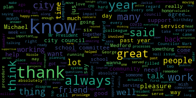
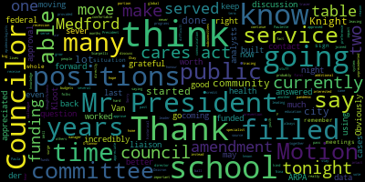

AI-generated transcript of City Council 12-21-21
English | español | português | 中国人 | kreyol ayisyen | tiếng việt | ខ្មែរ | русский | عربي | 한국인
Back to all transcripts
Heatmap of speakers
[SPEAKER_08]: Good evening, everyone. The 41st regular meeting of the Medford City Council. Mr. Clerk, please call the roll. Councilor Bears. Present. Councilor Franco. Present. Vice President Knight. Present. Councilor Marks. Present. Councilor Morell.
[Morell]: Present.
[SPEAKER_08]: Mr. Kelly. President Caraviello.
[Unidentified]: Present. Please rise and stand for the Pledge. I pledge allegiance to the flag of the United States of America, and to the Republic for which it stands, Okay. Okay, before we start, we're gonna accept... Where is that? In the back. Page five? Okay, report for committees.
[Caraviello]: 2-1, 6-2-5, December 14th, Committee of the Whole, report to follow. What was that? And then this was the Committee of the Whole, in regards to the CAFs, which will... Okay.
[Unidentified]: Okay.
[Caraviello]: 21631 December 63 of the whole. That was discussed the cash which will be discussing tonight. We have a motion to accept. So moved on motion by Councilor bears seconded by. Thank you, my couch Scarpelli was the clock please call the roll.
[Hurtubise]: Councilor Bears. Yes. Council Falco. Yes. Vice President night. Council marks. Yes. Council Morell. I'll just go Kelly.
[Caraviello]: Yes, President Kirby Oh yes seven affirmative motion passes. Council Scott. Okay, to 1625 December 14 to be a whole report that was on the, the tax rate. Vice President night second and by second. Second, my Councilor bears. It's a quick please call the roll.
[Hurtubise]: Councilor Bears. Yes, Council Falco Yes, Vice President night. Council marks. Yes, Council Morell. Councilor Scarpelli. Yes. President Caraviello.
[Caraviello]: Yes. I mean affirmative motion passes. Councilor Scarpelli. I'd like to suspend the motion to take paper 21635. To take paper 21635. On that motion, seconded by Councilor Falco. Mr. Clerk, please call the roll.
[Hurtubise]: Councilor Bears. Yes. Councilor Falco.
[NqJnNNyD4Uw_SPEAKER_06]: Yes.
[Hurtubise]: Vice President Knight. Yes. Councilor Marks. Yes. Councilor Morell.
[NqJnNNyD4Uw_SPEAKER_06]: Yes.
[Hurtubise]: Councilor Scarpelli.
[Caraviello]: Yes, President Caraviello. Yes, Senate affirmative motion passes. 21635, offered a discussion by President Caraviello, Councilor Falco, and Councilor Scarpelli. Be it resolved that the Medford City Council commend and congratulate Ms. Van der Kloot on her many decades of service to our community and on the Medford School Committee. Be it further resolved that the Medford City Council issue a commendation to Ms. Van der Kloot on the occasion of her retirement from the Medford School Committee. Paulette, welcome to the building. Place where you know very well.
[Van der Kloot]: I've never been here before.
[Unidentified]: I know, I know. Councilor Scarpelli.
[Scarpelli]: Yes. Councilor Falco. Thank you everyone to, give us this opportunity this evening to honor a very special person in our community and a very special person to me as I started my plan as an elected official. Paulette, you've always been that person that sets us straight. There's been some crazy times in the school committee where my Italian got up and Paula would sit me aside and say, George, you need to take a deep breath. And she was always, you were always the most calm person in the room and someone we always admired and looked to for guidance when it came to your experience. And for everything you've done, for our children, the school system, and the city of Medford. We appreciate everything you've done. So I know that Councilor Falco wants to say something, but we're gonna be presenting a plaque this evening from the Medford City Council to congratulate Paula Van De Koop on her 32 years of dedicated service to the children, the city of Medford, December, 2021.
[Falco]: Thank you console Scarpelli and Paulette, I wanted to thank you for your many, many years of service. George and I came on to the school committee at the same time and I was in 2010, we served you for six years. And I remember when we first came on. It was always good to actually be able to talk to someone to, to get, you know, to find out, get a historical perspective as to like why we did things the way we did. You always had the answers, you always, you know, you always, you know, had valuable information. And, you know, I want to thank you for your many years of service. And thank your family as well. 32 years is a long time. And, you know, You gave a lot to our community, to our public school system, and we appreciate all your hard work and effort, and thank you so much for your years of service to our community. Thank you. Thank you so much.
[Scarpelli]: So if we can, Paula, can you come on up and accept this plaque on behalf of the city council?
[Van der Kloot]: I have to tell you, I'm not here to receive a plaque tonight. In fact, what I'm here is to commend my fellow elected officials who are leaving their posts. very shortly, Michael Marks and John Falco. I've had the opportunity over the years to work with many fine individuals. And you know, sometimes we agreed and sometimes we didn't. But we always had found some place to have common ground. And I think that's so important in today's world. So I'd like to thank you, Michael, for the years that I served with you. You were such a kid then. were. And john, it was such a pleasure to serve with you for the years to watch you both go on to the city council, and we're going to miss you very very much so thank you so much, and my. The one thing that I think every elected official, whether we agree or disagree, there is a common bond between us, because of the years we've learned. to go out to campaign every two years and to put your families through that. And you both have such wonderful, wonderful families. And it was really pleasure of mine to watch, to know when they were born and to watch them grow, to graduate from high school, to go on to college. And it's really been a pleasure. So thank you both. And George, thank you for your kind words. And thank you. I appreciate it. And I appreciate my fellow Councilors.
[Unidentified]: President, Councilor Marks. Thank you, Mr. President.
[Marks]: It was an honor and a privilege to serve with Paulette Vander Kloof for the six years I was on the school committee. Paulette, don't go anywhere. During that period of time, Mr. President, the school committee ushered in what we refer to still after 20 something years, the brand new schools in Medford. And that was a very trying time as a member of Vanderkloot remembers. It was a lot of time and effort put into that. And the one thing, Mr. President, I do remember is Paulette Vanderkloot gave birth to her daughter on election day. Is that not correct? And, you know, being a politician, I wanted to try to outdo Paulette. And I missed it by about six hours. My wife gave birth to our twins the night before the election. And I still resent that, Paul. I don't know how you held off. I don't know what food you were eating, but you did a great job holding off. And the other point I have to mention, Mr. President, that I still resent to this day, is that Paulette Van der Kloot stole George Scarpelli's slogan. Give a hoot vote, Scarpelli was the original slogan. And that was stolen by Paulette. And I hope someday she recognizes that, Mr. President. Thank you, Mr. President.
[Caraviello]: Thank you. Senator, Denato has a citation for you also. You'd like to come back up here?
[Unidentified]: Yeah, see? These are all the ones you missed last night. Thank you, Mr. President and members of the council.
[Paul Donato]: Paulette, on behalf of the delegation, state delegation, state representative Farber, I believe who's your state representative in your district, and he regrets that he was not able to be here tonight because of another engagement. Let me thank, well, we know each other personally. We spent many of the Fourth of July together. And the dismay of this community is going to be that we don't have a Paulette Vanderkoop. With her knowledge of what was going on in the public school systems from the stages of the beginning of what this school was all about, and all the new schools that were there, Paulette Vanderkoop was in the forefront. of making it happen. And slogan that you have, you know, give a hoot and both of, I don't believe it was his.
[Van der Kloot]: No, give a hoot was so popular, he tried to take it over.
[Paul Donato]: But on behalf of the state delegation, I present you a citation. I'm not gonna read it, because you're giving it 1,400 of those away. But it's from our heart for all of the work that you did as a member of the school committee, a dedicated member of the school committee, one who made a major mark in education in our community, and you'll never be forgotten for it. God bless you.
[Van der Kloot]: Thank you. Thank you so much. One of the problems with masks is nobody can see me smile, and I just want you to know I'm printing ear to ear, so thank you very much.
[Caraviello]: Thank you, Mr. Representative. And Paula, with age comes wisdom. And you've brought a lot of wisdom to the city council over the years. And I thank you for your years of service to the city.
[Bears]: Mr. President, if I may just, I was grateful to be able to be here last night. And here's some from so many of the folks that you served with and worked with over your years. And I was able to say to you last night, but I think it's worth saying to the public, that I was able to grow up and go to schools that you built and the school system that you built. And I've never known a Medford that didn't have a Paulette Van der Kloot on the school committee. So I'm just incredibly grateful for the service that you provided and for the education that I was able to receive, I think with a big portion of credit going to you. So thank you very much.
[Caraviello]: Thank you.
[Knight]: Vice President Knight. Mr. President, thank you very much, and through you to Mr. Van der Kloot. Paulette, thank you very much for your service. Thank you to your family for allowing us the opportunity to have you for all these years. You've done a great job, and you know, the proof is in the pudding, the results are there. So I really want to wish you the best of luck in your retirement, and we hope to see you around the community as a very active participant engaged in the ongoings of what's happening in Medford moving forward. I remember you being the first progressive. As a young kid getting involved in politics Paulette was considered the first progressive and mentioned if I remember correctly, and I wish you all the best of luck Paulette so thank you very much for all you've done for us.
[Caraviello]: Thank you. Thank you. Thank you. If I could just briefly, I just want to say a few words.
[Morell]: I'm waiting on a baby myself and mine does not have the impeccable timing of other elected officials. So I'm sorry I couldn't be there in person, Paulette, but I just wanted to thank you for your advocacy, your advice, the time that you've given me personally, and of course the city and just everything you've done. And, you know, they say life is what 90% showing up and showing up for 32 years, that's dedication and service to the city. So I just want to add my thanks and congratulations. enjoy your time not being in the chambers, all of the time.
[Caraviello]: Thank you. So on the motion.
[Unidentified]: Please call the role. Council Councilor Bears.
[Hurtubise]: Yes, Council Falco. Yes, Vice President night. Councilmarks. Yes, Council Morell. Councilor Scarpelli? Yes. President Caraviello?
[Caraviello]: Yes, Senator Falco, the motion passes. Communications from the mayor. Dear Mr. President and councilors, I respectfully request and recommend that city council approves the following amendments to revise ordinances entitled personnel article two, classification and compensation plan, section 366-33, entitled officers, employees, non-union by adopting the following changes. Amendment F, the language of CAF 12 should be amended to include the following ARPA funded position. Economic Development Planner, $68,253.57 to $79,766.04. Amendment F. Amendment I. The language of each nine shall be amended to include the following offer for the position, inspectional services project manager $56,034.70 to $62,512.43. Public health sanitarium. $56,034.70 to $62,512.43. Amendment J, the language of H-9 shall be amended to include the following offer from the position. Public health response nurse, $55,439.14 to $65,124.24. Amendment K, language of CAF- Wait, excuse me.
[Marks]: And if you can give a brief synopsis, I believe we have someone from the mayor's office on.
[Caraviello]: On the motion by Councilor Marks, seconded by? Seconded by Councilor Scarpelli. Mr. Clerk, please call the roll.
[Hurtubise]: Councilor Bears? Yes. Councilor Falco? Yes. Vice President Knight? Yes. Councilor Marks? Yes. Councilor Morell? Yes. Councilor Scarpelli?
[Caraviello]: Yes.
[Hurtubise]: President Caraviello?
[Caraviello]: Yes, I've made affirmative motion passes. Do we have Nina? Nina's on. Nina Nazarian, would you like to speak on this?
[Nina Nazarian]: Yes, thank you, Mr. President, and thank you, members of the City Council. Just as some initial comments, I believe we obviously have discussed these positions at two prior meetings. I believe we share a common vision and goal. That is to develop a comprehensive ARPA spending plan which is built on a solid foundation so that the city can maximize its federal and state aid opportunities. We see that solid foundation being inclusive of the City Council's input, the community's input, and the input of key positions within the city. The positions before the City Council this evening are the bare minimum positions that are necessary to begin that planning effort in a sustainable way. Without these key positions, we will be under-resourced when it comes to reaching for more resources and opportunities at the federal and state level. There were several questions, in fact, several statements made at the Committee of the Whole meeting last week on the subject. We did take those comments to heart and are prepared to provide further information to the degree we are able to at this early stage on each. We sincerely ask for your support this evening as anything short of approval will have a negative impact on the city's ability to respond to the COVID-19 pandemic surge we're currently experiencing and will negatively impact the city's ability to maximize funding in this pandemic when resources are the biggest constraining factor. Thank you for your consideration.
[Caraviello]: Thank you. Any discussion on this before we take a vote?
[Knight]: Vice President Knight. In terms of how we're going to do this, Mr. President, what will we be doing will be going through each amendment will go for each one each member separate, are we going to discuss these amendments or just go.
[Caraviello]: We discussed them, I think we discussed them last week in Committee of the Whole meeting. If there's any discussion on them, we'll entertain that just as we get to each one.
[Knight]: The only concern I have is which positions are presently filled, which positions are filled and will be expiring for kids, after the Kids Act funding expires, which positions will go unfunded. For example, is amendment not funded? Is that a concern?
[Nina Nazarian]: Yes, I'd be happy to, Mr. President, and through you to Vice President Knight, I also would ask that the Health Director, Marianne O'Connor, jump in if I miss anyone. Amendment G, I'm sorry, Amendment F, the Economic Development Planner, I believe Planning Development Sustainability Director Alicia Hunt, who's online this evening, mentioned at one of the prior meetings that this position was quasi-filled, so to speak, that we're looking to, we have an existing employee who we would like to transition into this position. Anyway, moving on quickly. Amendment K, administrative support for COVID-19.
[Caraviello]: Way of evasion, Councilor Falco.
[Falco]: Thank you, Mr. President. Nina, if I may, you said quasi-filled. Is it filled or is it not filled?
[Nina Nazarian]: The cleanest answer is it's not filled.
[Falco]: It's not filled.
[Knight]: Mr. President, to be- Let's stick to the clean answers just to get through this.
[Bears]: Could we just discuss each amendment? Could we have that question answered as we go through the amendments instead of doing it all at once and then going back?
[Caraviello]: All right, we'll start with amendment F. On the motion, the economic development plan, do we have a motion on the table for the economic development plan?
[Bears]: Motion to table, Mr. President.
[Caraviello]: The motion by Councilor Bears to table the economic development plan, seconded by?
[Unidentified]: The motion by Councilor Bears, seconded by?
[Caraviello]: Motion to table amendment F. We have no, you don't have a second to table that, Councilor Bears. Okay.
[Marks]: Chair awaits the motion. Mr. President. Councilor Marks. Thank you, Mr. President.
[Caraviello]: On amendment O. We're on amendment F, Councilor Marks. We're going to start with the top. We're going to go right down. We're going to start at F and we're going to go right to the end. And we'll discuss each one as we get to them.
[Marks]: Right, but we had a committee of the whole meeting. Right. Which questions were asked of the administration. And I think we should at least get those questions answered before we go through the whole process again. But I had one question regarding frontline workers and first responders. And we were told by the city administration that there may be a salary limitation for those workers to receive APA money. And I was wondering if that question has been answered, Mr. President.
[Nina Nazarian]: Thank you, Mr. President. Thank you, Councilor Marks. I did look further into this information that's this question that was raised at the committee of the whole meeting, and I had seemed to recall a number and there's actually a lot of guidance. And so I'm just going to read very quickly unfortunately there is no straightforward answer as I mentioned, these rules have. a tremendous amount of data and information behind them, but I'll make it as quick as possible. Basically, per the interim final rule issued by the federal government. If premium pay would increase a worker's total above 150% of their residing states annual average annual wage for all occupants as defined by the Bureau of Labor Statistics Occupational Employment and Wage Statistics, or their residing country's average annual wage as defined by the same Bureau, whichever is higher on an annual basis, and then it goes on. So there's calculations that need to occur to determine that so-called minimum that we discussed, Councilor Marks, at the last meeting. Again, I'm happy to look further into this as we review again, premium pay and we review all the different categories with the federal funds manager.
[Marks]: Right. So from what I'm hearing tonight, that would not be a reason that frontline workers and first responders would not be able to attain some upper money for being on the front lines during the past 22 months of COVID. So that's encouraging to hear. I just hope the administration falls through, Mr. President, taking care of those workers, as I mentioned during the Committee of the Whole meeting. We're talking about workers that work at a convenience store. that were in the front line, Mr. President. We're talking about workers at stop and shop. We're talking about workers that worked in a doctor's office. We're talking about postal workers. We're talking about police, fire, EMTs. So I just hope, Mr. President, with this $49 million the city's receiving from the federal government, that we put our money where our mouth is and take care of those workers, Mr. President, that put their life on the line. and put their family's life on the line to make sure we could function as a community and as a society. So I would hope the administration steps forward on that, Mr. President. Amendment O, as I mentioned, Mr. President, it says that this is a CAF 12, which is the federal funds manager. I don't believe that it's a CAF 12. I would say that's more of a CAF 15, Mr. President, based on that salary. And I don't know if that's an error that was made by the administration, but if they can also talk to that, Mr. President, I'd be curious. Nina, can you answer that question?
[Nina Nazarian]: Absolutely, Mr. President. Thank you, Councilor Marks for the question. This actually came to my attention that there may be an error on this item on Monday morning. I wrote back to the clerk who was copied on the email It was brought to my attention by the director of veteran services. And I wrote back to the city clerk on this matter. I copied the city council president and the city council vice president on this, noting that there was a Scrivener's error indicating that it is a CAF 15.
[Marks]: So that is an error that we're being asked to vote on, Mr. President.
[Caraviello]: Yes, we'll change it.
[Marks]: Okay. And that's an important change, Mr. President. And the last point, Mr. President, I would like to bring up, and I brought this up during the Committee of the Whole meeting, so I've been very consistent on bringing up this issue, is the fact that we still have department heads in this community, non-union department heads, who for the past 22 months have not received a step raise. And I think the question was offered by Vice President Knight about whether that's contractual or not and so forth. But here we have a number of upper positions, Mr. President, at salaries that far exceed some of our department heads, existing department heads. So it's a tough pill to swallow when we're asking to bring in new positions, Mr. President, at a higher salary range while existing employees, existing department heads did not get their step raise. And we heard money was tight, Mr. President. And now we have $49 million of federal funding. and we have commitments out there to every non-union department head that they should receive their step raise. So I have a real tough time, Mr. President, voting for new positions for ARPA at a higher salary range without taking care of existing employees in this building that have been in here every day fighting through the pandemic. And that's an important distinction, Mr. President. We should take care of the workers we currently have. And as I stated at the community hall meeting, if we don't address frontline workers, first responders, as part of this ARPA funding, And if we don't take care of city employees, current city employees, I will not support this paper. I don't care how critical the administration says it is. They've been sitting on this paper for the past four months, Mr. President. We don't even have a federal funds manager, someone to oversee all of this. They could have put a federal funds manager, the first position on several months back. And now we're being told this is critical.
[Unidentified]: It's critical because they dropped the ball. That's why it's critical. Thank you, Mr. President. Councilor Bears.
[Bears]: Thank you, Mr. President. The reason I motion to table amendment F is that there are several positions in here I think many in public health that are currently filled and using cares act funding. My preference tonight would be that the council approved those positions so that those those continue to be funded we're moving from one federal funding source the cares act to the another one the ARPA. I think the federal funds manager is very important. Obviously, interested to hear the discussion and get questions answered but that's kind of where I'm coming from on this tonight, you know, we can have further discussion on positions that aren't filled but if there's stuff currently filled using cares act funding, and it's moving over to ARPA, I think we should move forward with that tonight.
[Scarpelli]: Thank you. Thank you, Mr. President. I appreciate everybody's hard work on presenting this but, again, I think Council marks brings out some valid points. And the first point that I think that business area and has has expressed the beginning and that our community whole meetings is. is really a plan. I'm finding this bothersome that we talked about this with traffic and parking, that when we're talking about money and different departments and really not having a plan in place yet and still having a focus group, but that was passed. But as this comes through our process here, again, without having these positions, and with the shared vision. I don't know how we can support until we know what this this ARPA money is going to encompass, because one of the things that was very clear last week. that other department heads weren't involved in these discussions, not to say that these positions right now aren't important. And I would tend to maybe agree with Councilor Bears with continuing some of these positions. But I think right now, I think Councilor Marks brought it up last week, that this position, Amendment O, That should have been presented. I think that tonight would probably be the only position that I would even entertain for the fact that we really don't have a plan. And this person for this position is the person to help us with that plan. Other than that, I don't, until we bring everybody to the table and really share a vision, you know, I'm lucky that I work in a community that the city council works with the administration and they share each other's visions to get the product to the community. And I'm not seeing this here and I'm very disappointed, really disheartened actually. So this is a lot of money that can do a lot of great things for our community. And right now, it seems like what we're getting now with traffic and parking now this paper is We're just gonna add things and spend. And then when we come down to some important pieces that we all feel that are important, we're gonna be told what? Unfortunately, we spent all of our ARPA funding. And without a plan, I can't support this. So thank you. Thank you. Councilor Bacow.
[Falco]: Thank you, Mr. President. I wanna share, I agree with my colleagues. This is a major concern. I know myself, I've been talking about this for months on end, and that there is absolutely no plan at all with regard to ARPA from the administration, none $48 million in no plan. We have had, we have not had a CFO for six months. Six months we have $191 million budget we have no CFO $48 million in ARPA funding no CFO, and no one right now is currently managing. I don't even think they're discussing opera in the finance office because I think they're basically trying to just do the day to day activities that that that occur on a daily basis. This is unacceptable. And then they throw it on us to say, oh, we need all these positions. There's no planning. There's a complete lack of planning when it comes to this. And it's unacceptable. I definitely could vote on the federal funds manager because I think that kicks us all off with regard to planning. Eventually we're gonna have to plan to do something with this money. It's unfortunate that the discussion has not happened yet. And if I may, Cat 15 Can you give us the range please.
[Nina Nazarian]: Thank you, Mr. President, through you to Councilor Marks. I have 8542 62 to 94,000 to 3532.
[Falco]: Okay, so that is the actual cat 15, but it was just listed as cap 12 on the original document.
[Nina Nazarian]: Yes, Councilor my that's a scrivener's error. On my end, I made that error.
[Falco]: Thank you. And who actually helps determine the actual caps? Is that the chief people officer?
[Nina Nazarian]: There is a process to review similar positions in other communities, similar positions within our organization, level of obviously work responsibility, level of training and education, Yes, it is essentially the human resources department that chief people officer becomes responsible to make recommendations.
[Caraviello]: Thank you. Thank you, Mr. President.
[Morell]: I understand the concern of my fellow Councilors. I'm very focused on the number of positions in this in the public health department. As we are, you know, entering a surge, unlike we've seen before, our testing sites, you know, they're incredible weights around the Commonwealth, and I have people reaching out to me, Medford residents reaching out to me and saying, why isn't Medford testing? Why aren't they doing X, Y, or Z? And I talk to people in the Department of Public Health and they say, we don't have the bandwidth and we need these positions to respond to the crisis we're in right now. These are something that I absolutely will vote for tonight. And I think we need to vote for. I understand the concerns about the plan. I have the same concerns, but we're in the middle of a surge. We're facing a major issue right now. And these are positions we need to respond to the challenges we're facing right now. And that's why I'll support them.
[Scarpelli]: Thank you. Thank you, Mr. President. Are we in the process of, I thought we were in the process of reviewing everybody's salary. Is that something we were doing? Isn't that I believe it was something that the mayor brought up that they were going to look at every position and look at each individual salary. Is this still happening or this wasn't part of that?
[Nina Nazarian]: Mr. President?
[Scarpelli]: Yes.
[Nina Nazarian]: Thank you. Thank you, Councilor Scalapelli. Yes, that is accurate. We have a classification and compensation study that's going to be launching very soon. The city has received a grant for that. Um, and essentially that process takes several months. Um, it's, it's, it's a process that will, uh, basically go on for much longer than the time period in which we need to get moving on many of these positions, but absolutely. I mean, these would be reviewed, um, to the degree, you know, each position, um, essentially the process has a cost per position. So. You know, we'd have to do the math as we enter to add positions to this organization, but we would absolutely review including these and all of, first and foremost, the existing positions we have.
[Scarpelli]: Last question, I'm sorry. Right now, how many of our units, are we whole now with every unit right now? Do we have any negotiations for contracts? A teacher's union, I believe is done. Are the other unions, as we move forward through these money papers, is everything complete? Do we have any big outstanding raises coming up or negotiations still out there?
[Nina Nazarian]: Um, Mr. President, I'm happy to answer any questions. I would advise that the City Council. And again, I'm happy to answer the questions. I would not be the body. I'm not anybody. You guys are the body, um, as to who is responsible for the open meeting law. I'm happy to answer the questions, but Contracts, um, Other other issues relating to Mr. President are not items that are on the agenda this evening. Again, I'm happy to answer the question I'm just advising and cautioning the city council as to the open meeting
[Scarpelli]: This is the question I'm presenting is on behalf of a money paper that we're voting on about money that this city has to spend. So as we make our decisions, I think it's important that we know if there are outstanding negotiations. It's not, you could say yes or no. You could say that. I'm not asking for any money. I'm not asking for anything that would interfere with any sort of negotiations, union negotiations. The question I have in front of you is very simple. is that are there any outstanding negotiations still with any major union in the city as you move forward to vote on a money paper? I believe that has nothing to do with the violation of meeting law, because it's a money paper that's in front of us. We're voting on money.
[Nina Nazarian]: Mr. President, again, I'm happy to answer the question. Again, it's not on the agenda, but the answer is yes, there are collective bargaining agreements that have not been settled. prior to this administration, which had not been settled. And I will add, Mr. President, that those are not able to use ARPA funding to subsidize them. So again, that's the reason I was cautioning. I was not intending, Councilor Scarapelli, to avoid the question. By any means, I'm just trying to provide some guidance.
[Scarpelli]: Okay, so that would have been my next question. But if you answer the question, the simple question, because it seemed like it was avoidance, just so our chief of staff could understand what it looks like, at least to this council.
[Marks]: Thank you. Thank you. Any further questions? Mr. President, just a point of information. The fire department has been without a contract, I believe, for close to two years now.
[Caraviello]: Thank you. All right, so get back to amendment F. has been a motion before by Councilor Bears to table the economic development planner. Seconded by Councilor Morell. Mr. Clerk, please call the roll. The table, the table.
[Scarpelli]: Again, Mr. President, this is not a position that's that's in place, correct? That is correct.
[Nina Nazarian]: Mr. President, can we just ask if the committee, in case I got it wrong, I'd just like to ask the Planning Development and Sustainability Director to speak on that. I know she wanted to speak earlier.
[Knight]: It's a yes or no question. Is the position vacant? We don't need to go into- Is the position vacant? No, that's the question.
[Nina Nazarian]: I believe the answer is yes, but I'm just looking for confirmation from my colleague.
[Caraviello]: Okay, so we have a motion on the floor by Councilor Behr, seconded by Councilor Morell. Mr. Clerk, please call the roll.
[Hurtubise]: Councilor Bears. Yes. Council Falco. Vice President night. Yes. Council marks. Council Morell.
[NqJnNNyD4Uw_SPEAKER_06]: Yes.
[Hurtubise]: Councilor Scarpelli. No. President care real.
[Caraviello]: Yes. Motion the table for three, four to three motion tables best. the inspectional services project manager.
[Knight]: Mr. President, in regards to the amendment, I think Chief of Staff, please tell us whether or not these positions are vacant or if they are filled with an incumbent.
[Caraviello]: Nina, can you tell us if the inspectional service project manager and the public health sanitarian, are they vacant positions?
[Nina Nazarian]: My understanding is yes, and I'm seeing the public health director, I mean, our director of public health confirming. Thank you.
[Caraviello]: if they are vacant positions. Motion to table. On the motion by the table by Councilor Bears, seconded by. Second. Councilor Knight, Mr. Clerk, please call the roll.
[Hurtubise]: Councilor Bears. Yes. Councilor Falco. No. Vice President Knight. Yes. Councilor Marks. No. Councilor Morell.
[NqJnNNyD4Uw_SPEAKER_06]: Yes.
[Hurtubise]: Councilor Scarpelli.
[NqJnNNyD4Uw_SPEAKER_06]: No.
[Hurtubise]: President Caraviello.
[Caraviello]: Yes, we're in the affirmative three negative motion. Motion table passes. Amendment J, public health response nurse. Nina, is this a vacant position also?
[Nina Nazarian]: Yes, Mr. President, it's my understanding.
[Caraviello]: On the motion for the public health response nurse. Motion to. Second. The motion by Councilor Naita-Table, seconded by Councilor Bears. Mr. Clerk, please call the roll.
[Hurtubise]: Councilor Bears. Yes. Councilor Falco. No. Vice President Knight. Yes. Councilor Marks. No. Councilor Morell. Yes. Councilor Scarpelli. No.
[Caraviello]: President Caraviello. Yes, for the affirmative. Motion to table passes. Amendment K, administrative support for COVID-19. Is that position currently filled?
[Nina Nazarian]: Yes, there's a person serving in a capacity to support that office if this position didn't move forward, we would need to essentially ask that person to come back, or maybe they would find a position in the meantime.
[Caraviello]: Motion to approve the motion by council best to approve seconded by second. Seconded by Councilor Morell. Mr. Clerk, please call the roll. Councilor Markswell.
[Marks]: Thank you, Mr. President. Before you call the roll, I'd like to go on record, Mr. President, stating that I will not be supporting this position until we find out about other city employees that have not received their step raises, Mr. President. Thank you. Thank you.
[Caraviello]: Mr. Clerk, please call the roll.
[Hurtubise]: And this is for first reading? For the first reading. Councilor Bears. Yes. Councilor Feliciano.
[Unidentified]: No.
[Hurtubise]: Vice President Knight.
[SPEAKER_24]: Yes.
[Hurtubise]: Councilor Marks. No. Councilor Morell. Yes. Councilor Scarpelli.
[Caraviello]: Yes. President Caraviello. Yes. Five in the affirmative, two in the negative, motion passes. Amendment L. Data analysts, community liaison, and contract tracer. Neither of these are currently filled positions.
[SPEAKER_20]: I know that contact tracer is presently being utilized. I defer to- I'm sorry.
[MaryAnn O'Connor]: Excuse me, Nina. I'm sorry, Mr. President. No, the data analyst is currently filled. The contact tracer is certainly someone we're looking to add on since we've had 650 cases since December 1st.
[Caraviello]: So the data analyst is filled and the community liaison and the contact tracers are not filled, correct?
[MaryAnn O'Connor]: Correct.
[Caraviello]: Thank you. Thank you.
[Knight]: What's the point three full time employee.
[Caraviello]: Mary and the council is asking you to point three full time employees.
[MaryAnn O'Connor]: Yes, she basically works about 10 hours a week and supporting us. 10 to 12. I'm sorry. Yes.
[Bears]: Sorry, and director O'Connor Did you say the community liaison we don't currently have that filled.
[MaryAnn O'Connor]: Correct those are currently filled under grant positions but those grant positions will be expiring in June.
[Bears]: Okay, so it's the data analysts the liaison are filled in the contact tracer would be additional.
[MaryAnn O'Connor]: Correct.
[Bears]: All right. I would move approval.
[Caraviello]: Second, three on all three I mean, yeah, we're in a motion by concept is seconded by Council morale.
[Marks]: Thank you, Mr. President. I will not be voting on this position as well. I just find it ironic, Mr. President, that when these positions were put forth for spending of ARPA money to assist in COVID needs in the community, that the administration was at the table, the Office of Community Development was at the table, and the Board of Health was at the table. who was not at the table, Mr. President, that would equally have needs for COVID spending, the Council on Aging was not at the table. Police and fire, first responders in this community were not at the table to seek what their needs are. The building department, DPW, the Office of Diversity, Mr. President, was not at the table. So in a sense of fairness, Mr. President, when we talk about not having a plan, as Councilor Falco mentions, he's absolutely right. Again, here we are going forward without a plan. I'm having deja vu. Two weeks ago, they asked us to vote to extend contracts so the city administration could take parking enforcement in-house. And this council said, what's the plan that you have to take over this program January 5th of next year? And the administration says, we don't have a plan.
[Unidentified]: So here we are again, voting on things without a plan. I just don't know where this council's going, Mr. President.
[Marks]: I understand there's a need for this. but there's also a need to follow a process. There's also a need to include all stakeholders, Mr. President, and that's currently not being done. When you have three department heads sitting around a table and omitting the other 10 department heads that have similar needs, I have a concern with that. When you're bringing in people off the street at a higher salary, Mr. President, then counting workers, I have a problem with that. When people aren't getting step raises and this council votes to bring people off the street at a higher salary, I have a problem with that. And we can always put things off. You know, I hear people fighting for people and people fight for this and that. When push comes to shove, they bury their head in the sand. And this is the exact issue right now when we talk about first responders and we talk about frontline workers. Again, we allow the administration to go off without a plan, and we refuse, Mr. President, to address the current needs. It's a sad state of affairs. Let me tell you, Mr. President. Thank you.
[Caraviello]: Thank you.
[Knight]: So, Vice President Knight, could Director O'Connor please clarify again when the grant expires on these greenfield positions?
[MaryAnn O'Connor]: Yes, certainly. Thank you, Councilor Knight, Mr. President. For the community liaisons, the grant will expire in June.
[Knight]: And for data analysts?
[MaryAnn O'Connor]: The CARES Act. That's a currently filled position by CARES Act, which is no longer available. Thank you very much.
[Scarpelli]: Any further questions? Mr. President. Councilor Scott Belli. Again, looking at the positions I agree with Council marks wholeheartedly. I believe I said that my first statement that we're doing this. We're doing this piecemeal, and it's not fair, but at the same time, I'm also looking at the positions that are there that are upholding that these positions to the coven. pandemic and looking to make sure that those positions are still moving forward. So as of right now, again, just for clarification, because maybe I'm not that quick, but the data analysis person is in place, but ends in June.
[Caraviello]: Data analysis is paid under the CARES Act.
[Scarpelli]: CARES Act that ends in June.
[Caraviello]: So the liaison is on a grant that's here till June.
[Bears]: Motion to sever data analysts from the other two positions.
[Caraviello]: The motion by Councilor Bears to sever the data analyst position from the other two positions. Seconded by Vice President Knight. Mr. Clerk, please call the roll.
[Hurtubise]: Yes, several council bears. Yes, Council Falcon. Yes, Vice President night. Councilmarks No. Council Morell. Yes, yes. Yes, President Caraviello.
[Caraviello]: Yes, 60 affirmative on the negative. Motion passes listen to approve the data analyst position on the motion by Councilor.
[Falco]: If I may just quickly. This is a 0.3, so this is 10 hours a week. And Marianne, did you say there's 600 people just in the month of December?
[MaryAnn O'Connor]: So the data analyst position is basically 10 to 12 hours a week, and that helps us set up our clinics. It helps us convey information to the community on where we're at, where our stats at, helping with the graphs and charts every week, and also doing the back end of the multi-resource multilingual resource line and keeping track of the information coming in there as well. The contact tracing position, as you may or may not be aware, the state ended its contact tracing program as of December 31. Actually, they stopped taking cases December 1, just as the surge blew up. We do have a grant that we're currently in regionally with Somerville and Arlington, which has given us additional capability, but no way able to keep up with 650 cases from Medford alone since December 1st, which is why that contact tracing position right now is critical.
[Falco]: So shouldn't it be more than a 0.5?
[MaryAnn O'Connor]: Well, when I wrote this, It was pre search, and we had hoped that point five would would do what we needed. But again with with the additional help from the grant that we have with metric with some of all knowledge and obviously, you know, it's not what we expected to happen back. So, it's point five was what was written a month or so ago.
[Falco]: So, we know we're going into this really not being staffed correctly.
[MaryAnn O'Connor]: Absolutely. That's why all of those positions are there. We cannot, we are hurting. We need these positions. We've lost staff due to COVID fatigue, basically. The emergency response coordinator we were being able to pay through CARES funding, that person left, our food security person left, basically burnout. We are in need here in the Board of Health, and we have been doing our best, but I sorely hope that you consider us being able to continue to protect and inform the residents of Medford to the best of our ability, if not, We're not going to be able to keep up the vaccination clinics, the testing, the data, the contact tracing. We're on the edge.
[Falco]: I don't disagree that you need the positions. I think one of the big concerns is the process. And that is that we've been talking about a pandemic for two years. It's not going away. You know, I think, you know, many of us or some of us are thinking that this would have been planned. And I'm not, this is not on you, but that this would have been planned out by the administration months ago. And we just got this paper a few weeks ago. And this goes back to Councilor Mark saying that there's no plan. I don't, excuse me. You can hop and pop all you want. There's no plan.
[Bears]: What if it makes you comfortable? Is the fact that we, this is not worth people's health and lives.
[Falco]: I'm not saying that. I just said, I didn't say that.
[Bears]: Well, if we're not going to pass it, then we're not going to have contact tracing. We're in the Omicron surge. We have 700 cases or 650 cases. So, you know, I'll vote to keep this ball in the air as much as we can, but I'd like to approve the positions.
[Marks]: You should stay home then.
[Bears]: You should stay home.
[Marks]: All right. We'll be soon enough. All right.
[Unidentified]: Hey, enough.
[Caraviello]: Thank you. Okay, so we have a motion on the floor for the data analyst. Which one is funded through June? The community liaison. Okay, thank you. So we have a motion on the floor for the data analyst, which was on the motion by Councilor Bears. Seconded by? Second. Seconded by Councilor Morell. Mr. Clerk, please call the roll.
[Hurtubise]: Councilor Bears? Yes. Councilor Falco?
[Unidentified]: Yes.
[Hurtubise]: Vice President Knight? Councilmarks No. Council Morell. Yes. Councilor Scarpelli Yes. President care of yellow.
[Caraviello]: Yes, six in front of one of the negative motion passes. On the motion for community liaison, which on the motion by Council based the table the community liaison seconded by second by Vice President, Mr.
[Unidentified]: to table Councilor Bears. Yes.
[Hurtubise]: Council Falco.
[Unidentified]: No.
[Hurtubise]: Vice President night. Yes. Councilmarks. So, Council Morell. Yes. Councilor Kelly. No. President carry on.
[Caraviello]: Yes. What three motion to approve the table is best contact racer. The motion by Vice President, the table the contact tracer seconded by second second by Councilor bears Mr. clerk please call the role.
[Hurtubise]: Councilor Bears. Yes. No. Vice President night. Council marks know Council Morell. Councilor Scarpelli? No. President Kiribayama?
[Caraviello]: Yes. 4-3 motion to table passes. Amendment M. Emergency preparedness coordinator, community social worker, food security specialist, health equity and outreach coordinator, and epidemiologist and a youth prevention specialist. Mariana, these are all filled positions.
[MaryAnn O'Connor]: The community social worker, is currently filled. I'm sorry, what were the other food security specialist right now has has left the position but it's basically volunteering her time. 68 new families were added to the food list this week for food deliveries. And she's basically acting as a volunteer right now. I'm sorry. It's not filled. It's not filled.
[Caraviello]: What about the health equity and outreach coordinator?
[MaryAnn O'Connor]: That's not filled. That's not a current position. The community social worker is currently acting. It's currently working. Mr. President.
[Nina Nazarian]: Mr. President.
[Caraviello]: Only one person can speak at a time. I can't hear you.
[Nina Nazarian]: Mr. I'm not sure if I may, Mr. President.
[Caraviello]: Excuse me. Nina.
[Nina Nazarian]: Thank you. Um, for the food security specialist as the director of public health mentioned a moment ago, that person is volunteering, but that person is volunteering in a capacity that they basically hope to come back for. So I would just add that for the council's knowledge. I would ask the council to strongly consider both the community social worker and the food security specialist.
[Bears]: Thank you, Mr. President. Are the epidemiologists and youth prevention specialist positions filled?
[MaryAnn O'Connor]: No, they are positions that we would like to add.
[Bears]: Thank you.
[Caraviello]: All right. So, on amendment M, do we want to vote on this separately or do we want to vote on this separately? Motion to sever.
[Bears]: Motion to sever.
[Caraviello]: The motion by Councilor Baer to sever, seconded by Councilor Scarpelli. Mr. Clerk, please call the roll. seven yeah table and everything, except for council bears.
[Hurtubise]: Yes. Council Falco. Yes. Vice President night. Councilmarks. Council Morell.
[NqJnNNyD4Uw_SPEAKER_06]: Yes.
[Hurtubise]: Councilor Kelly. Yes, President care of yellow.
[Caraviello]: Yes, 16 affirmative one negative motion to several passes. Emergency Preparedness coordinator motion the table, or the motion by Council of bears the table seconded by second. Seconded by Councilor Rob. Mr. Clerk, please call the roll.
[Hurtubise]: Okay. Councilor Bears. Yes. Councilor Falco. No. Vice President night. Yes. Councilmarks. Oh, Council Morell.
[NqJnNNyD4Uw_SPEAKER_06]: Yes.
[Hurtubise]: Councilor Scarpelli. President Caraviello.
[Caraviello]: Yes, for the affirmative, three in the negative. Motion to table passes. Community social worker. Motion to approve. On the motion by Councilor Bears to approve. Seconded by Councilor Morell. Mr. Clerk, please call the roll.
[Hurtubise]: To approve for first reading.
[Unidentified]: Approved for first reading.
[Hurtubise]: Yes. Yes. Yes. Yes. Yes. Yes. Yes. Yes.
[Caraviello]: Yes.
[Hurtubise]: Yes. Yes. Yes. Yes. Yes. Yes. Yes. Yes.
[Caraviello]: Second. The motion by Vice President Knight to table food security specialists, health equity and outreach coordinator, epidemiology and youth prevention specialists. Seconded by Councilor Bears. Mr. Clerk, please call the roll.
[Hurtubise]: Councilor Bears. Yes. Zero. Councilor Falco. No. Vice President Knight.
[Marks]: Zero.
[Hurtubise]: Councilor Marks. No. Councilor Morell?
[NqJnNNyD4Uw_SPEAKER_06]: Yes.
[Hurtubise]: Councilor Scarpelli? President Caraviello?
[Caraviello]: Yes, for the affirmative, three in the negative, motion to table passes. Amendment end. No, that's it. Amendment end. COVID-19 public information officer.
[Nina Nazarian]: Mr. President, yes, this position is filled.
[Caraviello]: That is filled, correct? Is it? Nina, did you say that was a filled position?
[Nina Nazarian]: Yes, Mr. President.
[Caraviello]: Thank you.
[Falco]: If I may, Mr. President, this is the Steve Smerdy role, am I correct?
[Caraviello]: I think you are correct. Nina, is this the position?
[Nina Nazarian]: Yes, Mr. President. Yes, Councilor Felkel.
[Falco]: So currently, is he straddling two roles as the COVID person and is he the interim communications director?
[Nina Nazarian]: Mr. President, through you, yes, he is. We are seeking an intern to support that role because it is obviously something that requires both the director of communications as well as the COVID-19 information officer, but he is presently doing both jobs.
[Falco]: This person is going to be doing just COVID-related, he's going to be the COVID-19 public information officer and he'll be only doing COVID-related activities, correct?
[Nina Nazarian]: when he is not no longer acting director of communications that's correct.
[Bears]: I hope so. Thank you. Nina is this currently funded through the cares act.
[Nina Nazarian]: Yes. Mr. President through you.
[Caraviello]: Yes. Motion to approve a motion by council to approve second invite. Second.
[Hurtubise]: This is to approve for the first reading.
[Unidentified]: Approve the first reading.
[Hurtubise]: Councilor Bears. Yes. Councilor Falco. Yes. Vice President Knight. Councilor Marks. No. Councilor Morell. Yes. Councilor Scarpelli. President Caraviello.
[Caraviello]: Yes, 60 affirmative, one of the negative motion passes for Texas first reading. Amendment O, federal funds manager.
[Nina Nazarian]: Mr. President, this position is not filled at this time, but as stated at one of the prior meetings.
[Caraviello]: Seconded by. Additional positions may be added to the existing comments that the paragraph. On the motion by Council night to strike the last paragraph, second by second by Council Scott belly, Mr. President, Council marks.
[Marks]: Thank you, Mr. President, as I stated from the outset, this is the truly the only one position Mr. President, the federal funds manager. that should have been put on first. This is how you get the ball rolling to then have your public meetings and input from stakeholders to then establish what you wanna do in the community. So we're kind of putting the horse before the cart by doing this after the fact. So I support this one position, Mr. President, getting the ball rolling. I still find it troubling that tonight, We have the Board of Health Director, who's the highest health official in the city, saying, I need a laundry list of positions because we're concerned about the increase in COVID. And we have members of this council tonight picking and choosing from the Board of Health Director saying, I need these positions, they're vital, choosing only to put on positions that currently have someone in that position. If there's no one in the position, Mr. President, members of this council are saying, we're tabling it for now. And then the health director saying, no, I need this position. So it makes no sense, Mr. President. And that's what happens when you do piecemeal, like Councilor Scarpelli said, when you don't have a plan, you make decisions, Mr. President, not based on anything other than knee-jerk reactions. And that's what this council's doing now, knee-jerk reactions, Mr. President. Thank you. Thank you.
[Caraviello]: Okay, on the motion for the federal, excuse me, to delete the, the, the, the last paragraph by Councilor Knight second by second by Councilor Scarpelli, Mr. Clerk, please call the roll.
[Hurtubise]: Councilor Bears. Yes. Councilor Falco. Yes. Vice President night. Council marks. Yes. Council Morell. Yes. I'll just go Kelly.
[Caraviello]: Yes. President care via six affirmative motion passes on the motion for the federal funds manager. Motion by Vice President Knight, seconded by.
[Hurtubise]: Second.
[Caraviello]: Seconded by Councilor Bears. Mr. Clerk, please call the roll.
[Hurtubise]: Councilor Bears. Yes. Councilor Falco.
[SPEAKER_18]: Yes.
[Hurtubise]: Vice President Knight. Yes. Councilor Marks. Yes. Councilor Morell.
[NqJnNNyD4Uw_SPEAKER_06]: Yes.
[Hurtubise]: Councilor Scarpelli.
[NqJnNNyD4Uw_SPEAKER_06]: Yes.
[Caraviello]: President Caraviello. Yes, seven in the affirmative. Motion passes and tickets first reading. Okay, 21634. President Caraviello and honorable members of the Medford City Council. Flippership drive, approval of an easement to the Commonwealth of Massachusetts Department of Conservation and Recreation. Mr. President, city council and the council. I respectfully request or recommend that your Honorable Body approve and authorize the grant of an easement to the Commonwealth of Massachusetts Department of Conservation and Recreation. The purpose of this easement is to install, construct, operate, maintain, repair, reconstruct, and replace a public recreation non-motorized bike trail and pedestrian trail. The connector over said easement as part of the Clippership connector. For your information, I am submitting a copy of the document containing the proposed grant of easement along with a plan setting for the area. A representative from the Department of Conservation and Recreation and Alicia Hunt, Director of Planning, Development and Sustainability will be in attendance to answer any questions that may arise. Any questions on the easement? We have somebody from the DCR here, am I correct, Mr. Steller? Yep, hang on. Any questions for the DCR or Alicia Hunt on this?
[Knight]: Mr. President, Vice President Knight, this project's been something that's been going on for what seems like now three administrations. We've seen some progress be made. Is there any indication as to how far along we are, what phase we're in, in terms of seeing this Trail comes to reality, number one. Number two, I know we've expended some money for remediation in the area due to some soil contamination. And there was also been some concerns relative to the abutters that needed to be addressed as the planning stages were going on. So I'm wondering if the director of that office with way too many words can tell us exactly what's going on with this project and where we stand.
[Caraviello]: Thank you. Mr. Sons, do you have an answer for Councilor Knight's question?
[Alicia Hunt]: Mr. President, I thank you very much this evening. I can tell you that the remediation that's in the area where the path itself is going to be put has been completed and Ms. Lensing, Stella Lensing is the project manager and she is with us this evening and she could give us an update on the timing as this project is to be constructed by the state DCR. I do believe she may need to be unmuted again.
[Unidentified]: Thank you.
[SPEAKER_12]: Good evening, Mr. President and members of the City Council. Thank you so much. Yes, we are... I beg your pardon?
[Caraviello]: May I have your name and address for the record, please?
[SPEAKER_12]: Yes, my name is Stella Lansing. I'm a project manager with the Department of Conservation and Recreation.
[Unidentified]: Thank you.
[SPEAKER_12]: So, as Ms. Hunt explained, We are almost ready to put this project out to bed. We have completed our design process. We're at 100% design. We are finalizing our easements. And once we have those all in place, we can be ready to advertise this project for construction later this year, spring, summer of 2022. I do have materials ready to show visual of the area that we are requesting an easement for. If you would like me to share my screen, I can do so.
[Unidentified]: Yes. If you could, that'd be helpful. Okay. It looks like the screen sharing is disabled. should be all set now.
[Caraviello]: You can share your screen now.
[SPEAKER_12]: Okay. Can everybody see this plan? So again, I just want to provide an overview of the location of the proposed greenway. It's between Clippership Drive and the middle school. And this graphic right here shows all the different parcels that we're in the process of acquiring easements for. Number four indicated over here would be this easement for over the city land connecting to Clippership Drive. Just to be more clear on that, this parcel is located at Clippership Drive and it's about an easement that's approximately 20 feet wide and approximately 1,749 square feet in area. And that's all information I have. to share, so I can stop sharing or I could take some questions while the screen is up.
[Unidentified]: This goes behind the scenes, correct? I beg your pardon? Yes, it should go there. Okay, any further questions?
[Caraviello]: Any further questions? Mr. President. Councilor Marks.
[Marks]: Thank you, Mr. President. And this has been a long process. The connectivity, I think, is long overdue. It adds a safety element for pedestrians, cyclists, that I think will serve a purpose that has been needed in this community for a lot of years. It'll connect the east side of Medford into Medford Square and far beyond, Mr. President, in a safe fashion. The one concern in the neighborhood meetings that I attended back some time ago, probably close to two years ago, maybe even longer than that. time flies, is that we're now introducing a bike path slash pedestrian path within feet from the rear doors of many residents on Clippership Drive. And that was a major concern at the time of many property owners in that area that, you know, that support the project, but we're also concerned that now we're introducing people, bikes, foot walkers that have never been in that area before. And they were concerned about safety, public safety and rightfully so. So I was wondering, I noticed in the correspondence we received, it said the purpose of the easement is to install, construct, operate, maintain, repair the recreational non-motorized bicycle pedestrian trail. but it doesn't talk about who is actually going to provide the public safety and patrol that particular area, Mr. President. Now that we're introducing people along the river back there, that was never a path. So I didn't know if the woman from DCI can answer that question or someone from the city administration, but I have a concern about the patrolling and the safety of that particular area. And will it be lit, Mr. President, at all? We all took, at least I know I did, a tour of the whole area along the water back there, and it's a dark, isolated area. And I wanna make sure when we do this, I support this 1,000%, but I wanna make sure we're not introducing a public safety concern as well, Mr. President. So I would ask the representative from DCR or someone from the city administration to talk about safety and security of people using the path, as well as the direct above us.
[Alicia Hunt]: So Mr. President, it is my understanding from discussions with the police in the state that there's a mutual aid agreement for the city and the state on shared use trails like this, so that either one, they will both have jurisdiction on this location. The actual discussion of patrols is one that would occur with the police chief at the point that we actually have something ready to open, which will be on the order of a year from now.
[Caraviello]: What about lighting on the bridge?
[Alicia Hunt]: With regards to the lighting, there is a plan to do lighting under the I-93 bridge where it will pass under. But Ms. Lensing can correct me if I am wrong on this, but there is a policy in DCR to not light their shared use paths and to not introduce lighting directly along the river because of the wildlife.
[SPEAKER_12]: Um, thank you, Mr. That is correct. We, um. Do not usually like our linear corridors because we also see these as conservation corridors and wildlife corridors, but there will be lighting under the I 93. Under pause.
[Marks]: Thank you. So Mr. President, just so I understand, so there is a commitment that public safety will be provided either by the city of Medford or by state police when this is finally built out and so forth. So there is a commitment in that part of safety will be enforced, is that correct? If I understood that right, I think that is correct. Am I correct?
[SPEAKER_12]: That seems correct, Mr. President.
[Caraviello]: Thank you, Mr. President. Thank you. So, any further discussion on this.
[Scarpelli]: Thank you, Mr. President, I, I think, as we get closer, I think that Councilmarks brings up a great point that we I think it's important that we let all of the people that will traverse that area, know that that's not going to be a little area because it know, especially as we get going, I think that maybe that when we get closer to this project to completion, that we work with the city and the state to make sure that there's signs posted. And citizens all understand because that's pretty scary. I understand that's conservation land, but not having that area lit in many different levels. I know, I know Councilmember Mox brought up the big point of the the members of the community a little bit about this. Um, we've gone to a lot of discussion with this, but now not having a lit area and we can understand being police the right way. And we appreciate state and local authorities working together. But I think that, um, making sure at the time we post, um, throughout that area as it gets dark so people can understand that it will not be lit. I know that if my daughter says, Dad, I'm going to go to one side or the other, and I'm going to be pretty scared as a parent that my daughter is going to make that trek during the evening when it's not lit. That could be a recipe for some pretty serious issues. So I would hope that as we get closer and I bring this forward, that we all agree to at least that point that it's a public notice and we put out some signage so people understand what's happening. So thank you. Thank you. Any further questions?
[Caraviello]: Mr. Castagnetti, name and address of the record, please.
[Castagnetti]: Andrew Castagnetti in Method, Massachusetts. I wanna say hallelujah, I am very thrilled and very happy to finally see this project hopefully come to completion. This is a half mile missing bike path that is a blockade to the rest of the 10 miles in both directions. From West Mifflin beyond, you can come to Medford Square today, but this is half mile that does not exist in the middle of the square from the Senior Services Center to the new schools. In my opinion, this is 20 years late when the new schools were built. It could have been done then, but better late than never, I hope. I hope it gets done now while I'm still alive. And I want, it must be, done according to the Riparian Rights Law in 1600s in Massachusetts, which guarantees we the people access to 10 feet above high tide along all waterways, including the Mystic River and the oceans and the state. And especially, it must be completed along the river behind those eight condos, numbered 54 to 68 on Ship Avenue, because they have two fences on each side of the property, next to the Royal House, the Riverside Yacht Club. Both their fences, from the front sidewalk to the rear, they go right into the river. That is a blockage of the 10 foot that We have a right under the repairing rights law in this state from the 1600s mind. So, and if the condo owners didn't know they didn't own the last 10 feet towards the river in their backyards, it's not the people's fault. They must have a deed and a plot plan. And the point is the law is on our side. Thank you very much. Also, is this going to go behind those condominiums? I want to ask the people in charge of this operation.
[Caraviello]: That's not the paper that's before us this evening. We don't have that paper. Vice President Knight.
[Knight]: Mr. President, I move for approval of the paper and request that the DCR hold the pre-construction meeting with the Butters after securing the necessary permitting to move forward with the project. Ms.
[Caraviello]: Castagnetti, anything else? Good luck. All the motion by Vice President seconded by second. Second, I can't submit Mr. Clifford.
[Hurtubise]: Councilor Bears. Yes, Council Falco. Yes, Vice President night. Yes. Council marks is briefly absent from the chamber Council morale. Yes. Council Scarpelli. Yes, President carry on.
[Caraviello]: Yeah, six informative one absent motion passes. 621636 offered by Councilor Falco. Council wish Stella Tanaglia a happy 90th birthday. Councilor Falco.
[Falco]: Thank you, Mr. President. I'd like to wish Stella Tanaglia a happy 90th birthday. Her birthday is coming up this Friday, December 24th. She's a longtime resident of the city of Medford and a longtime city City Hall employee and member of St Francis Parish and St Francis mothers club so she's been involved in a lot of things throughout the city and I just wanted to say happy birthday, happy 90th birthday to her and best wishes.
[Caraviello]: Thank you.
[Scarpelli]: Happy birthday Stella.
[Caraviello]: Happy birthday Stella. Thank you talk about.
[Scarpelli]: a face we miss around here and the godmother of Medford. What a great tribute to acknowledge Stella's 90th birthday. We have to thank her for her number one present to the city of Medford, the birth of her little young son, Steve. And little Stevie and what he's done for the city. So thank you and happy and hopefully many more birthdays, Stella. Mr. President, I just see little Steve actually here in the audience.
[Knight]: Come up and wish his mother a happy birthday. Maybe the state rep can walk him up, if we can. State Representative Donato can walk him up. State Representative Donato, can you walk him up? State Representative Donato, can you walk him up?
[Scarpelli]: State Representative Donato, can you walk him up? State Representative Donato, can you walk him up? State Representative Donato, can you walk him up? State Representative Donato, can you walk him up?
[Unidentified]: State Representative Donato, can you walk him up?
[SPEAKER_24]: State Representative Donato, can you walk him up? State Representative Donato, can you walk him up? State Representative Donato, can you walk him up? State Representative Donato, can you walk him up? State Representative Donato, can you walk him up? State Representative Donato, can you walk him up? State Representative Donato, can you walk him up? State Representative Donato, can you walk him up? State Representative Donato, can you walk him up? State and I appreciate all your kind words. Thank you.
[Caraviello]: Thank you. All the motion by Councilor Falco, seconded by? Second. Seconded by Councilor Miz. Mr. Clerk, please call the roll.
[Hurtubise]: Councilors? Yes. Councilor Falco? Yes. Vice President Knight? Yes. Councilor Marks?
[NqJnNNyD4Uw_SPEAKER_06]: Yes.
[Hurtubise]: Councilor Morell?
[NqJnNNyD4Uw_SPEAKER_06]: Yes.
[Hurtubise]: Councilor Scarpelli? Yes. President Caraviello?
[Caraviello]: Yes. Seven in the affirmative, motion passes. Public participation. Anyone want to speak to public participation? Good evening, sir. Name and address of the record, please.
[SPEAKER_18]: My name is Robert Pantazzo, Summit Road. And what subject would you be speaking on, sir? I'd speak on the Ambulatory Surgical Center up at the location of the Lawrence Memorial Hospital at 170 Governor's Avenue. The reason why I'm bringing this up was after reviewing your city budget and recognizing that you folks set a tax rate this past week, unless I missed it all together, there was no inclusion at all as it related to the amount of money that the new ambulatory service center would be bringing to the city of Medford. I believe this past, last past Tuesday, On the 14th of December you folks sat in committee and discuss the tax rate. And I believe, and I could be wrong. One of the questions that was asked by one of your colleagues Council marked to the assessor as it relates to have you arrived at any kind of a decision regarding the tax rate. at that location 170 Governors Avenue and the assessor responded that they had filed for a tax exempt status. Conferring upon that and having a brief discussion once again and reaffirming this conversation with Councilor Falco who once again had the same type of concern as related to the assessor's issue of how and what they're going to be taxed. I think she said that it's charitable or something of that nature. So putting that together, and I just went back and just did a little bit of history on this because I was involved in many of the issues on this particular matter. On August 28th of 2018, I sent a certified letter to the State Department of Public Health. And one of the components of the letter, it was issued, I issued the regard regarding tax exam status, which up until that point in time had not been mentioned. On September 17th of 2018, in the method transcript, And headline title future of the lots of oil hostile include community input on this say, but in paragraph number 10. I like the existing building, it says the ASC will be a for profit and will therefore pay property taxes to the city of method that came right from them themselves. October 30 2018 and the city council meeting. It was discussed again as to whether the proposed ASC being a builder and the hospital footprint would pay taxes, would it be by the square footage of the whole Lawrence and will hospital footprint itself. November 19 2018 at the council meeting, there was a need for an update for clarification for our city of sex office as to how the SC will be determined for tax purposes if approved by the State Department of Public Health. Will it be for the whole Lawrence Memorial Campus to be considered as a for profit, or would it be broken down by the square footage of each building separately. Again, on November 27 of 2019 Susan Sandberg, then CEO and Vice President of Melrose Wakefield Hospital, appeared before the city council saying for the first time that the AFC will be a for profit business here in the city of method. Again in November 2018 I sprinted into the method transcript. The discussion was once again, a for profit business. December 6 2018, the method transcript said in the proposed commentary period regarding method officials. Then in paragraph 13, quote, the proposed method surgery LLC, a joint venture between then named Melrose Wakefield and the Shields Healthcare as being a for-profit taxable ASC. February 19th, 2019 at a city council meeting, issues were presented as it related to the construction and to the taxing status. March 19th, 2019, Melrose Wakefield then notifies the city council and the city that the separate footprint that was going to be at 170 Governors Avenue would now be merged into the property of the Lawrence Memorial Hospital. April 23 2019 the city council meeting, Sue Sandberg said that she was so pleased with the development that have been taking place regarding this proposal taxes will be determined by the city assessor regarding this tax matter, and Michael Max F at the city will be doing a pilot program on the $733,000 community health initiative that community health initiative was a planned a planned program for health services within this community and surrounding communities over two to a five year period. I have not heard one comment by this city, this city administration, or the city assessor's office, as it relates to what is the plan program. And if in fact it became a pilot program, it was possibly discussed at that time. May 7 2019 at a committee of the whole meeting once again Council mass ask who, who is going to be paying the taxes on their separate office space, or not. The mayor at that time, who was the city council, indicated that she was concerned of a pilot program as it related to just what and how, if we're not going to be getting taxes, if we're going to be involved in a pilot program. Councilman Fred De La Russa also made comment as he was concerned over how the tax issue was going to take place. On May 28th, 2019, city council once again Vice President Susan Sandberg said the ASC will provide new tax revenue and will provide an additional $750,000 within a two to five year period for additional area services. She reiterated on May 18, that for which was said on April of that year of the Community Health Service $750,000. On June 4, a letter was sent to Susan Sandberg by myself once again, talking about issues as it relates to the taxing issue. And then on October 15, 2019, Susan Sandberg reiterated that the ASA will bring tax revenue to the city of Medford. Also, then-Councilor and then-Mayor Brenna Lundgren stated that she wanted the developer to provide for the city of Medford a tax, a tax review number one and number two, the vote will take you can say that the vote that the council is taking that the, the, the agreement would go to the petitioner, not to the land. When they made their proposal before this method city council into the state. Their information presentation read as follows in one of their sections. What benefits will an ASC bring to the city of Medford? Their response was the ASC will pay local taxes, as well as add jobs in the area. In addition, as part of the state revenue process, there will be a substantial community benefits contribution, that's the $750,000 I was talking about, to help address the pressing health and social welfare needs of Medford and other communities. The total amount the ASC will contribute towards community health initiatives is approximately $733,000, and that'll be paid over a two to five year period of time. From that period of time, from May 7 of 2015, that can be the whole meeting. And I believe you had at that point in time made reference to Councilor Falco as it relates to that particular meeting, as it relates to how taxes were going to be paid. This city council has not been advised, never mind the council, the taxpayers have not been advised as just how and when it's going to take place for taxes. And how are they going to pay it and when are they going to play it, and what meetings if anything has taken place at that meeting in May of 2019. I also presented before there before the city assessor communities such as Weymouth, and then the central hospital and what they were doing with their cities and towns in combination of either a and in lieu of taxes or a tax payment to be made. You have received nothing. Nothing has come back, Mr. President, as it relates to this particular issue. I secured from the Secretary of State and the State Attorney General's Office, there was no filing of any sorts, other than the amendment that they filed in 12-4-2020, which was December 4th, of a change of address. They had the original address in Boston, and now they changed it to 170. Now, just because they're built at 170, 170 Governors Avenue, same address as the Lowell Memorial Hospital, where urgent care is there right now, There should be no taking advantage of that being a tax exempt nonprofit. When she was came in here. They made it perfectly clear that the linchpin to this deal was that they would pay taxes to the city method on the ASC 16,000 square foot piece of building that they were building for $17,500,000. It's a shame that during this budgetary process, when you were setting and addressing your tax rate. Nothing was presented as it relates to the anticipation of approximately any wisdom, five and a half million plus dollars on an annual assessment of that piece of property, what that would bring in for taxes here to the city of medicine. But before this council gets going again in January next year that this issue is brought to your attention we've heard all kinds of rumors oh yeah they're going to pay, whatever it might have been, you have nothing from the assessor's office in this city. That's saying number one, they're going to pay. You don't have anything regarding the community health portion of $755,000, that's going to be paid over to a five year period of time for the health initiatives and concerns that you might have to be brought forward, and that was brought to the state's Department of Public Health. When this was all presented. This is a real concern that I have I'm very concerned over this because That's hundreds and thousands of dollars that potentially could belong to the city of method coffers that could be used, whether it's in our public health department, our schools our budgets police fire, whatever it might be. This is too small of a thought to be issue when in fact it's a big issue. And to me it's such a big issue that it hasn't been discussed, I say shame on everyone who knows what that should have been done. This should not be a red herring coming up now to say okay why are we talking about we're talking about now because nobody in the city has talked about it. And if somebody made a mistake in their commentary that that's it's for profit will then so be it. If it's a for profit, not enough. If it is for a for profit business, excuse me, you people should have this information. We the taxpayers should have that information. I don't understand. Is anyone behind this real received anything.
[Caraviello]: I, on this matter, I reached out to the hospital, and we got to this matter, and they will be. It is a for profit and they will be paying taxes for 2021.
[SPEAKER_18]: So let me ask you this, Mr. President, directly. You had a conversation. Do you have anything in writing from them that says that? If you want something in writing, I will get something in writing. I think the council deserves it, and I think your tax base and your tax rate deserves it. I will have something in writing. I would strongly suggest that a council resolution go forward seeking that, and that nailing it down. And for further information, Sue Sandberg is no longer with Melrose-Wakefield.
[Caraviello]: This is an issue for the Board of Assessors, Mr. President. Thank you. And I say, I will get that paper for you. Thank you very much. You're welcome. Okay. Moving on to the part of the evening that everybody came here for. No.
[Sharon Deyeso]: Good evening. Sharon Diesso, Circuit Road and Metro. I'm gonna be brief. It's gonna be hard, but I have just a few comments to make. Holy and a fun or fun holiday week coming up to everyone. It's been trying for everyone. I'm still waiting for my class to open at Bunker Hill. So I'm helping two great principals in the city. They're all great. Just to let you know, Nicholas Tucci and Paul Delever at the high school. I cannot tell you what they go through on a daily basis, trying to flip-flop rooms and swapping teachers around and taking care of the kids. And they're keeping that school, schools very clean and taking good care of our kids. I wanted to add that. It's good to see everybody. I know we're going to have a strange year ahead, because we are, we sometimes meet people in our lives, who to coin a phrase is kind of corny, make a difference. So I had the pleasure years ago along with former Councilor Penter and Mr. Caraviello, I've known him and his family for years, who have made a remarkable difference because they really do their homework. But I became especially involved with some of the issues and you've heard me here too. And I noticed over the years, there were only a few of you who really were here concerned about and mentioned taxpayer money. So I have to commend Mr. Councilor Marks, my friend, Michael Max, for his years and years of service being here.
[Caraviello]: You'll have a chance, we're gonna try to get this going, if you give us a chance.
[Sharon Deyeso]: Oh, okay.
[Caraviello]: All right, so everyone's got a chance to give both Councilor Falco and Councilor Marks some memories.
[Van der Kloot]: Yeah, okay, we're back.
[Caraviello]: Thank you. Thank you very much. So, tonight is the final meeting for Councilor Falco, three terms on the council, and for Councilor Marks, a whole bunch of terms on the council. We'll start with Councilor Falco first. Councilor, Vice President Knight.
[Knight]: Hello, Johnny. It's been a good run, brother. I first met John playing basketball at St. Francis in the CYO when he and his cousin Peter were coaching the team of misfits over there that he put in the back of his minivan and would drive around from church to church in the greater Boston region, helping us kids stay busy and stay off the streets as a teenager. And since that time I've always been very fond of john through our work in politics we've been able to develop a great friendship and it's something that I'm very thankful for john it's been great working with you it's a pleasure. I feel like every year that I sit here on the council and serve as the term goes by. We lose another friend. First, it was Paul Camuso, then it was Freddie Dello Russo, and now I'm seeing you go. And it's this transition in government and this progress that we're seeing in this community that's great. But, you know, at the same time, we're losing a lot of great people with institutional knowledge. And you're going to be sadly missed. I always had a great pleasure working with you and a great time with you. A lot of laughs and a lot of fun. You know, we didn't agree all the time. And when we didn't agree, we sure got at it. But when we did agree, we did a lot of great work together. So with that being said, John, congratulations on 12 years of great service to this community. And thank you to your wife and family for allowing us the opportunity to have you as well. You know, it's been a long run. It's been a great run. And I'm sure that this is the last we're going to see you in the field of politics.
[Bears]: Thank you, Mr. President. You know, couldn't say it better than Councilor Knight, but it's been an honour to serve with you. You were the first Council President when I came on, and two months into that term, a global pandemic started. And I always appreciated your thoughtfulness and communication, leading this Council through unprecedented times. And, you know, We've done a lot in two years, more than I could even say right now but I think we've done a lot of good for this community you've done a lot of good for the 10 years before we served together on the school, when you were on school committee and city council. I think you may have joined the school committee as I was leaving the Medford Public Schools and we had some difficult budgets back then after that 2008 recession. And I know that you worked hard with Councilor Scarpelli, Paula van der Kloot and many others to keep all of our programs intact. So you've had an impact on me directly, both as a colleague and as a leader before that. And I really appreciate your service. Thank you.
[Scarpelli]: Thank you, Mr. President. To my friend John Falco, it's a sad day. I won't lie to you. I first want to thank his his family, his wife, Jackie. I don't think anyone could say they had a better partner beside them. I think that Jackie has showing that she supports you in every which way and allowing her to represent the city for so many years. I think that you've done an amazing job with your boys, John, Joey, and Jack. I think that it's a great, you show not only how, what kind of a leader you are, but also as a parent. If only one day, you could dress down and make me feel okay. I dress. You just couldn't do it. I thought maybe today you'd show up with that fake tuxedo shirt and but you didn't do it john and I applaud you, but We've gone through a lot. We started this together some time ago and we decided the reason why we wanted to do it is because we love Medford and we wanted to do what's best for Medford. And you stepping up and challenging the mayor for the most important seat here in the city, I think gives you, shows a lot in who you are as a person. And a lot of phone calls, I mean, I think other than Dina and I talking, I think you probably in the top three phone calls that we shared. We didn't see eye to eye in some things, but we always respected each other. And I think that's what we see that we're lacking in society. It's okay to disagree, but always have that respect for each other. And I think that you've done that. You've been a great example of that. called you my friend before we started this journey. And hopefully I call you a friend for a hundred more years. So thank you for everything you've done. It will be sad. I think that a lot of times when I look across the room, I look at my two colleagues to look for, you know, support and something I said or something somebody said, and all you guys have to do is show me your eyes and especially with these wonderful masks. Your friendship and guidance is something that I'm going to miss as a Councilor, but I know we'll be together for a long time. So you've made your mother and father very proud. You've made the Falco name very proud. And, um, and thank you for everything.
[Caraviello]: Thank you.
[Morell]: Thank you, Mr. President. I mean, it's hard to say what hasn't already been said, but I think just personally, I want to thank you, John. You've always treated me, um, even when I was first running just as a as a friend, rather than a foe, even if we didn't always agree on issues, you always were magnanimous and polite, and something that goes a long way in politics. I've been happy to sit next to you for this past year, just to have someone with institutional knowledge beside me, a little comic relief sometimes, and also just similar to what Councilor Scarpelli just said, just, you know, sometimes you have to, everyone has to make sure they heard the same thing. So that's, I appreciate that and your willingness Um, chat with me and, and also what Councilor bear said, you, um, you know, we're the first council president I work with and, um, it, it truly challenging and wild year. And I know you worked your hardest to navigate as a strange space. And many times when, um, you know, the council was pretty acrimonious, uh, internally and, and I'm, you know, can see that's not easy. Um, and I really appreciate your work on that and just, um, your, your dedication to the city. And I just wanna echo my fellow Councilors and thank you for your service and wish you all the best whatever may come next.
[Caraviello]: Thank you councilor.
[Marks]: Councilor Marks. Thank you, Mr. President. I truly believe we shouldn't recognize anyone if they're not here for over 20 years. that you can get in a disagreement and an argument with that was so nice that you didn't realize you were arguing with him. Really, John was nice about everything. I don't ever remember a bad word said about John Falco. And John, I refer to as someone that walks soft but carried a big stick. And this council, over the six years John served, made some major changes to things that people in the public may not know or didn't receive press, but it was John Falco that revamped our whole budgeting process. It was John Falco's expertise in budgeting and finance that led to major changes on how we review the budget and how we as a council request the administration to present the budget to us. And that was thanks to John Falco. And that wasn't press, that was anything other than John wanting to do the right thing and making the process transparent, which leads to my other point. It was John Falco during this COVID period for the last 22 months that stood up and said, we need to still operate government. We still need to have transparency. We still need to include the community, even though we may not have open forums or forums people can attend. And it was John that led the charge to make sure in our Committee of the Whole meetings and subcommittee meetings that may not be on the floor were taped and televised live. That was john Falco. Now that didn't get a ton of fanfare. But when you talk about transparency, john just didn't talk the talk he walked the walk. And that was a major change of this council, and it led to boards and commissions. and other entities in the community fall in suit. So for those two reasons, Mr. President, I wanna thank John Falco. I know this is not the last we're gonna see of John in this community. And he's a great family man, as we can see from his family and three sons and his wife in the audience. And John, it was a pleasure serving with you for the past six years.
[Caraviello]: Thank you. John and I became pretty good friends over the last four or five years. I don't think a day or two didn't go by where I didn't talk to john Falco on a daily basis. They talked to my wife. They say, you know, Councilmarks brought up some real good points about things john did. Again, john was a great leader here of the community. He led us through a very difficult time in the city. And I thank him for his leadership. John, I know Representative Donato has a little something for you, and the city has a city council or something, but John, I wanna thank you for your friendship over the years, and thank your wife for giving us to you for all these years, and your mother and father for producing a good son like you. John, thank you very much. And Representative Donato, would you? What if John doesn't wanna share the spotlight with you?
[Unidentified]: Okay, John, if you'd like to come forward.
[Caraviello]: John, on behalf of our other Councilors here, we have this plaque for you for years of service to the community. And I want to thank you. And I know we haven't seen the last of you. And again, I'll still be calling you.
[Falco]: No problem.
[Caraviello]: Thank you very much.
[Falco]: Thank you so much.
[Caraviello]: Thank you, John.
[Falco]: You know, I will be brief.
[Unidentified]: I'm going to take this off, but I will be brief.
[Falco]: I can't thank you enough all for your very kind words. It is absolutely been a pleasure serving with each and every one of you. Zach and Nicole, it's only been two years, but Adam, George, Michael, Rick. It's been six and it has been an absolute pleasure to serve with each and every one of you. You know, we maybe didn't always agree on everything, but we agree to disagree and we move on. Because we always had the common goal of moving Medford forward. That's what was always most important to all of us and You know, the council always works well when we work together, but there are disagreements, and we've had disagreements, but we move forward, and I think, you know, we've been a really good team, and we've got a lot of work done over the past six years. So I thank you. It's been a real pleasure working with each and every one here. I wanna thank, you know, everyone here tonight, those that are at home, and especially thank my wife, Jackie, in the back, and my three sons, John, Joey, and Jack, for all of their support throughout the years. You know, to be a selected official, to be a successful elected official, you really need that support at home. And Jackie and the boys have always been very, very supportive. So I wanna thank them for their love and their support through the past 12 years. It's been an absolute honor and a privilege to serve the city of Medford the past 12 years as a member of the, school committee and as a member of the city council. And I can't thank you enough for having the confidence in me to be reelected numerous times to the school committee and to the city council. During my tenure in the school committee, I had the opportunity to work with some great people. And to make improvements both inside of the schools and outside of the schools, new science labs, field of dreams, updated technology, updated vocational school, renovated swimming pool. But that comes when you work as a team. And we did that on the school committee. We had the honor of working with some really great people. Paula Van der Kloot, Emery Cuno, Sharon Guzik, Billy O'Keefe, Bob Skerry, Aaron DiBenedetto, and my good friend, George Scarpell. You know, we keep like you said, George, we came into this 12 years ago. And, you know, I remember working really hard on the school committee when we came in. And we had all kinds of goals. And I think we accomplished a lot of those and we left at a better place. But you know, that continues and you know that the next group is stepping up in there, you know, they're making progress as well. And on the city council, I had an opportunity to work with some great talented people in spearheaded some projects here as well. Like I said, you know, Even if, you know, I spare something individually or if any of us had something individual, it always takes the support of your colleagues to move it forward, like cameras in the community hall of the city council office, you know, to televise all of our meetings, you know, support of having our, you know, community police meetings moved out into the neighborhoods. You know, those are things that zoning, zoning reform. And those are things that I like to think that I let on, but you know, it takes support from your colleagues and you've all been very supportive. So I thank you for that. It's been, like I said, it's, you know, it works well when the council works together and, you know, together we moved a lot of, you know, projects forward. And I thank you so much. You know, President Caraviello, we've known each other for years and you're right. I think there were many days I just had to talk to you more than I talked to Jackie, but you know, it's our passion for, City politics and making the city a better place. Council and I. You've been great to talk to probably one of the smartest people I know in city government knows how things work. And, you know, process procedure and you've always been on top of that and, you know, I thank you for all your help and the guidance there. Our friendship goes back a long way. And, you know, there were many times where, you know, we'd have serious conversations, but we'd laugh a lot along the way. And that always helped. Councilor Marks, the senior statesman of the city council. I can't even tell you how many times probably over the past year, I looked at you and I said, well, you know what? He's right. It's absolutely right, just here. I realized just over time, but it's funny, you had the experience, it's been valuable. And I think that's something that we always have to remember, I think as Councilors moving forward, is that there's processes and there's procedures and they're there for a reason. And you always make a good point saying, this is how we're supposed to do this. And a lot can be said for that, because when you don't have processes and procedures, things fall apart. And it's important that we follow those processes and procedures and whatnot. And I thank you. It's been a pleasure serving with you. And thank you so much. Fred DeLaRusso, not here tonight, but he was someone that I truly enjoyed sharing, working with over time. I maybe didn't agree with him all the time. Fred, he was great to work with. We didn't agree on a lot. I shouldn't say we didn't agree on a lot, but there were many things we didn't agree on. But once again, we agreed to disagree. He was someone that I could call, someone that I could talk to. And he was fabulous to work with. Zach and Nicole, like I said, we only worked together for two years, but you've been great to work with. I know if I ever, Nicole's on screen here. But I know it's always been, if I need to call you and talk to you, it's always been a pleasure talking to you. You always take my calls. And it's been great working with the both of you. So I thank you very much for your time. And I thank you. for working with you. You've both been great. And, you know, and I also want to thank Mayor McGlynn and Mayor Stephanie Michini-Burke. You know, I worked with them both on the school committee and on the city council for 12 years. They, you know, leadership starts at the top and they led a lot of great initiatives and did a lot of great work. Representative Donato. You've been a friend for many years, and it has always been a pleasure working with you. I thank you for your friendship and for your advice through the years. You've been great to work with. If I ever had any questions regarding what was happening at the state level and how it was going to impact our city, you always did answer and answer the call, and I thank you for that. And I represent about Lee and representative Barbara and Senate jail and I thank them as well and it's it's it's been an honor to work with with all of you. And thank you to the department heads. Now there are many department heads that we have here at City Hall. There are many that don't work here any longer. I want to thank them, both those that are here and those that aren't here any longer. I thank them. And I thank all of the workers in the City of Medford and the school system that are here day in, day out, making it happen. You know, the policemen, the police officers, the firefighters, like I said, everyone in this in our school system, thanks to them. I mean, take a look at the people that you know, we don't think of that, not that we don't think of that often, but the people that are always there working 24 seven, there's a there's a water leak in the middle of February and someone's freezing water, trying to repair it to make sure that people have running water in their neighborhoods. And those are the people that they're not recognized as often as they should. And I wanna thank each and every one of them for all of their help, all of their support, answering my phone calls when I had questions that needed to be answered. So I wanna thank them as well. And Larry Lepore, Thank you for being here every week. I apologize that you have had to look at the back of my head for the past six years. But it has been an absolute pleasure working with you. You've always had a smile on your face. You've been great to talk to. It's always nice to see you when you drop by with the agenda every Friday. So I thank you for being a good friend for the years. And I want to wish I just didn't get. Good luck. You know, I hope you enjoy this as much as I have. This has been a thrill of a lifetime to represent the residents of our great city, and I want to wish you well in the future years and in the term ahead. On a personal note, I want to thank my campaign committee. In all my friends that have helped out with the various campaigns over the past 12 years, I believe they say it's not about the destination, it's about the journey. And it's been an amazing journey over the past 12 years. I have met a lot of friends that will be friends for life. And I can say that, especially in the past year running for mayor. There's so many people that I met along the way that he did not know prior to that were just fabulous and they're great friends today, and they'll always be friends. And, you know, in, you know, in hindsight thinking back at the 12 years they think about. condolence resolutions that come up every so often. And, you know, you start to think about the many community members that we've lost along the way and the impact that they've had. And, you know, and, you know, I just, it brings back fond memories, the people and the impact that they've had on our community. And, you know, they had a big impact on what we do here each week as well. In closing, I thank everyone. Like I said, it has been an honor and a privilege to represent everyone here in the city of Medford. I absolutely love this job and I hope that I have served you well. Thank you for the opportunity to serve. And like I said, it's been an honor and a privilege. Thank you and be well.
[Unidentified]: Thank you.
[Caraviello]: And last but not least, Councilor Marks. So tonight, close to 40 years of institutional knowledge is walking out the store. And like Councilor Falco said earlier, institutional knowledge is key and who to call and who not to call. But again, I wanna thank you, John and Michael for your many years of service. So Councilor Knight.
[Knight]: It's only been eight years, huh, Michael? And it feels like eight minutes underwater. No, I'll joke it aside, Michael. I can honestly say that I owe you a debt of gratitude for making me a better Councilor, because I knew every day that I came into these chambers, I had to be on my A game, because you were prepared, you were ready, and most importantly, you held your colleagues accountable. And that's something I always respected you for. You hold your colleagues accountable. You said what you meant, you did what you were going to say. It's commendable. There aren't too many politicians around anymore these days that are what they are and do what they do and say what they say. And you walk the walk and you talk the talk. And it's really been great working with you. I've learned a lot from you. But like I said, you know, I've always looked forward to those Tuesday nights, when Parker Musa was sitting in that chair and you were sitting here and I was sitting here and Bob Penta was sitting there and Freddie was here and Brianna was here. You'd see fireworks. Some nights on issues that we didn't agree on. And then on nights, and the things that we did agree on and we were clicking. What great work we were able to accomplish, and over the last couple of years, you know, As I matured in my role I've come to agree with you in a lot more things than I did when I first started and I think that that comes with the experience of the job. And it also comes with having that open line of communication and being able to respect each other as colleagues and professionals, and I always have had that respect for you. And I want to thank you for all the service that you provided this community it's been a long run, it's been a long run. You know, we shared a great story today when you said that my father had sent you an email relative to the service that you provided to this community, and I think that that just goes to show you how. highly we hold you in our household, although we don't necessarily agree all the time, we've always been able to move past that for the greater good which is this community and I'm very grateful to have had the opportunity to serve with you, and I look forward to being able to serve with you in some capacity in the future, whatever it may be. You're really someone that has a vision is someone that wants to execute that vision and is someone that's always cared about the city more than you've cared about anything else. With that being said, Mike, congratulations. It's been a great run. Uh, you know, you've been here for a very long time. I can remember the first time I met you, um, when I was, you know, just out of college working for Senator Shannon and you were running for a city council and, uh, Billy Wood was giving me, uh, the business file holding science with Paul Camuso because I was coming out of the Senator's office. Um, and that was, uh, how many years ago, geez, you know? Um, so Mike, it's just, it's been a great, great run. I could go on and on and on and not pat you on the back, but, uh, I think you know what you've accomplished. I've always been someone that's been putting results before the rhetoric and someone who's always been able to walk the walk and hold his head proud because he's been able to look at the mirror every morning and nobody's believed is right. So thank you for that. Thank you. Congratulations.
[Bears]: Thank you, Mr. President. I think probably in these past two years I've been in more meetings with you than any other Councilor we've served on subcommittees, obviously these meetings committee of the whole, and and your historical knowledge, your understanding of something that started 20 years ago and we're still dealing with it now. I think it's been incredibly helpful to me in the smallest situation of the biggest situation. But I also have to count echo Councilor Knight, and we've had a few knockdown drag outs here. And welcome. And it's, you know, every time I'm like, maybe I'll be a little less anxious when Michael gets that bulldog attitude on and he's coming at you, but it makes me think about what I'm doing. what I'm bringing to the table, the argument that I wanna put forward at that specific moment. You know, we even had one tonight and I'm glad we're going out on the same page that we've been going on the whole time because exactly what Councilor Knight said, you make me a better councilor, you make me more knowledgeable about what's going on in the city. You changed my mind more than I expected when I started. And not only that, you've been in public service as long as I can remember here in Medford. I remember holding out a sign in 2003 for Bruce Kulik, because his daughter was in my elementary school class. And your signs are out there, and they have been ever since then. So that can't be understated, what you've given to the city, the time, your family, and your service. And I think it will be missed, and it is definitely deeply appreciated and evidenced by the many, many times that you've been re-elected by the residents of this community. So thank you.
[Caraviello]: Thank you. Thank you, Councilor Bates. Councilor Scarpelli.
[Scarpelli]: Thank you, Council President. First, again, I think we owe a great gratitude to Mike's wife, Lisa, his daughters, Gianna and Olivia, and son, Evan. I think that when we've talked, we've talked so proudly of your children, and it makes me a better father. As a person, When I got that phone call, when you called me and said Georgia decided to step down, whether you realize it or not, it got choked up. And because I think that what Michael Marx has taught us is to love Medford, be true to who you are and fight for the community members, whether you know them or not. Nobody talks about charter review and wanting to have precinct award representation, Michael Marx is a great example, why that might not help why that might not work, because Michael Marx worked as hard as he could for someone that lived in Wellington Glenwood. or someone who lived in Hillside or someone from West Medford and North Medford or South Medford. You worked hard for every single person. Not only that, you were prepared. And I think I said this probably one of the most impressive evenings. And I remember that night that you came out and talked about an issue and you were so thorough and so prepared that I don't know how we as a council couldn't support you. And I think that's what you've always done because you've believed in what you wanted to say. And again, I'll say it again. I think that if society understood what happens in these chambers and we can all understand to agree to disagree and have the pride and respect for a person across from you that might not look at things the same way, but maybe understand it. Because I tell you a lot of times I didn't agree what you were saying, but I had to take a step back like my dad taught me with his Jesuit upbringing. To put yourself in that person's shoes and I realized a lot of time, boy, you don't wear to eat. And my feet hurt because I stood in your shoes so many times and realized, wow, that man is right. And most of the time is because you love Medford. I'm gonna, it's gonna be tough because one thing you realized is what a good man you are. And a lot of people, you know, when you first got on that, all that Michael Mox, he's something. He just, he's just an angry man and he's just not a good man. And then you sit with the man, you realize what a great individual, what a great father, what a great husband, what a great friend. Because I tell you, Mike, when I might have something down with my family, you were there, the phone call was there, had nothing to do with city council. You know, whether it was a edible arrangement for my daughter when she was going through a tough time. And when I said today is Council Marks' last day, she says, I have basketball. Can I watch it? I said, you can watch it. But she really wanted to be here because you make impacts on people's lives that you don't even know. So I will tell you, I know that what you've given this city, I don't know if people really truly appreciate it until you're gone, but you have made a fighter out of every single one of us and taught us how to do it the right way. So my friend, thank you for all your years of service. You set a path that people should follow, that passion should be in our hearts, no matter if you're here a year or 44 years. And I will carry that on with me until my last day in the seat. And you'll always be my friend. And I think that's what's more important. So thank you. Thank you. Thank you. Councilor Morell.
[Morell]: Thank you, Mr. President. Councilor Marks, I mean, it's no secret that we don't always agree, but I have always truly respected just the amount of homework you do before every meeting. And I can see it on the papers next to you, the amount of preparation you come to meetings with and ready to speak. And I don't think a meeting has gone by where you haven't asked a question or raised a point that's made me kind of rethink or reframe how I'm thinking about a topic. It may not totally change my vote, but it absolutely provides a perspective that I didn't think of and is so needed and so welcome in these meetings. As someone who perhaps my signature is my brevity, I am truly impressed and amazed at your ability to speak at length on topics and not repeat yourself, it's truly, it's unlike anything else anyone else can do, and it's very impressive. And really, in the two years we've worked together, you've never phoned it in. I think even at 11 p.m., which maybe sometimes some of us would like you to phone it in, if it was an issue that you were passionate about, that residents cared about, you were ready to fight, and you were ready to speak your piece on it, and that's absolutely admirable. And as Councilor Scarpelli just said, door knocking campaigning talking to residents around the city I've met many many members of your fan club people who are very appreciative of the work you do, and you as an individual and you leaving the council, you're going to be deeply missed by the community and I thank you as others have said for for challenging me challenging me to be a better Councilor and know just, I have to come to every meeting and be on my toes because of you and I thank you for that and your service to the city for so long.
[Caraviello]: Thank you. Thank you. Thank you.
[Falco]: Mr. President, I'd like to thank Michael for his many, many years of service. You've been a great colleague, you've been a great friend. You've always kept all of us on our toes, and that's a good thing. You are amazing when it comes to a number of things, but constituent services, I think, has been your wheelhouse, no matter who I talk to. I talk to Councilor Marks. I talk to Councilor Marks. Just the way you know so much about everything with regard to the issues that are happening in this city. And like I said before, you bring that institutional knowledge of how things have been done before in the past, or maybe if something has changed, and then you point out why it has changed and why it's important to do things the way we're doing things. And that's been huge. And it's been great serving with you. It's been very educational. You come to each and every meeting. ready to talk ready to debate ready to talk about the issues, you're always prepared. Like I have the customer said you always have you know your files you actually I was a few weeks ago you clean out your file cabinet I don't know how many trips you made. A lot of paper there, but you know you've always come armed and with data and you do the research you do the work. You know it's it's been great serving with you, I you know we've had some comical times over the past year, so I know we had a I think back to committee, the whole meeting we had on Sydney street. in the woods behind the Budweiser plant. The trees are going into the residents yard. We had to go back there and have a committee of the whole and we're tripping all over the place. But, you know, Michael had the history with regard to, you know, I think how Budweiser was supposed to be, you know, maintaining the property and they weren't. And, you know, we called them out on it and they resolved the issue. And so, like I said, constituent services has been, You're just amazing when it comes to that, and a number of other things, but you've always been there. I know when I've called and asked you questions, you've taken the time to walk me through that, to walk me through different issues and whatnot, and it's been an absolute pleasure to serve with you. I know you're a great dad and a great family. I wanna thank your kids for sharing your dad with us for the many years that he served here and that he's given back to the city. It's hard to believe it's been 20 years, but I want to wish you well moving forward. I know you're gonna, I know you'll still be involved. I know you love living in the city of Medford and I know you love being involved and I can't thank you enough for the guidance that you've given me through the years. And it's a little story. I'll tell a little story really quick. Back when Michael was first running for council, I got a call from a mutual friend, Dr. Wood. And he said to me, he said to me, I need your help. And I said, what do you need my help with? He's like, I got a friend running for city council. And I said, who is it? Michael Mox. I said, okay. He's like, I need your help with signs on election day. Can you help me out? And I said, yeah, I'll help you out. So I held signs for Michael in his first campaign. And, you know, but like, you know, But things like that allow you to meet people like Ray Cipriani and Bill Wilder, who are friends with Billy, who've been friends with me ever since I helped him run on the campaign that day. But that's the nice thing about community and working together. And I like to think I put Michael over the top and got this started. Michael, I just want to thank you for your years of service. It's been a pleasure serving with you. And I thank you for all your hard work through the years, and I wish you well.
[Caraviello]: Thank you. Likewise. Thank you, Jim. Thank you, Councilor Falco. So, I think I'm the only guy that's had the fastest rise from junior to senior councilor. That's right. In like 10 years. That's right. It's gonna be a sad day when I come back in January, because everybody I started with 10 years ago will be gone. So that makes me a little sad, because it's a lot of memories, a lot of things happened here over the years. Serving with Michael has been fun and challenging at times. I remember when you first get elected, you've got these grand ambitions and you're gonna change the world and you know everything. Until you say something and Michael Marx hits you back. He doesn't do it to me, but he lets you understand, hey, I'm in charge here.
[SPEAKER_08]: And don't mistake it.
[Caraviello]: But you know, over the years, a lot of people said to me, why is the Michael Marx president of the council? And there's a good reason why. I think Councilor Falco can tell you and I can, there's other people that have been in the front. When you stand up at the podium here, you lose your voice. And Councilor Marks' trademark is his voice. for the voice of the community for about 26 years. And that's his trademark. And that's what people come to know him. And I think that's part of the reason he never took up this podium because he wouldn't be able to be the Michael Marks that we know and appreciate. So that's what the people always say, you know, give the guy a chance. I say, I asked him to be president last time and he didn't want to. And I understand why, because I say, He's the voice of the community. And I say, from being up in the party, you no longer be the voice of the community. So I wanna thank him for his years of being the voice of the community. And he's helped make me a better councilor. There's no such thing as a slam dunk proposal with councilmembers. You look at the agenda and you say, geez, it'll be an easy night, we'll be out of here quick. No. There was there was there was no such thing as a slam dunk proposal with Councilman Miles. He was thorough. I'm telling you, you know, hey, listen, that's his job. And I thank him, you know, I think he made me a better councilor over the years and him and I have become good friends over the last few years also. And I just want to thank him and his family for his years of service here. And Mike, if you'd like to come up here, we have a little something for you. Well, he called me and he said, Rick, don't get me a chair. He said, I don't want a chair. So I didn't know what to get, and so I... So what's the rules for people? It's 10 years. Well, according to you, it's 10 years, and... But he didn't want a chair. Listen, I don't think I want a rocking chair either when I go. You will, sir. You will. But on behalf of the council, I want to present you with this card.
[Marks]: Beautiful. Thank you. Thank you. Thank you very much. Thank you, Mr. President. Thank you.
[Hurtubise]: I'll never be late for another meeting. Thank you, Mr. President.
[Marks]: This is bittersweet. It's been a long run and I've enjoyed it. You know, tonight's go around with all the Councilors, I would recommend for the next council, try doing that once a week. Try turning to your colleague and saying, thank you for doing this. Thank you for doing that.
[Unidentified]: It really goes a long way. It's remarkable. You know, some things have changed over the last 30 years. I have right here now, I use spectacles to see. My ability to, I think, reason and
[Marks]: talk issues out has changed over the years. My temperament has changed, believe it or not. But one thing that hasn't changed is my love for this community. And I will forever be grateful for the honor and privilege to serve the residents of this community. for the past three decades, 26 years altogether. You know, when people put their trust and confidence in you, it's probably the highest form of respect someone can show, right? Someone that takes the time to go to the poll and say, I'm with you. Someone to put up a launch sign, someone to donate money in tough times. And that always meant so much to me that Why would all these people put their trust and confidence in me? I never realized it until it dawned on me that we're all in this together. We have a great community here. And what makes the community is its residents. It's not the city of Medford, it's its residents. It's the people that live here. It's the people that care. And, you know, I truly believe that what makes us a great community is a community that's united. And there are going to be many issues that may separate us. There are going to be many issues that we may have differences of agreement on. But I think the one thing we can agree upon is that we want to move this city forward and we love this community. And I think we're at that point now. I wanna thank my family. I have my three children here tonight. I didn't have kids when I first ran for office. And it's amazing. I have three children here tonight, my son, Evan. who's finishing up his studies at UMass Amherst. My daughter Olivia, who just took her test and is now a registered dietician. And my oldest, my daughter Gianna, who is a first grade teacher.
[Unidentified]: I can't begin to say how proud they've made me over the years.
[Marks]: And I just wanna thank them. I wanna thank for being there for me. I wanna thank for allowing me to participate at the fullest. I gave this job my everything for almost three decades. And no matter what people say, and I don't have to tell my colleagues, it takes from your family life. But I signed up for it. I'm not, I wouldn't change anything. I signed up for it, but my family was there every inch of the way through good times and bad times. And I want to thank my three kids. My biggest supporter, my rock, my wife Lisa is at home tonight. Anyone that knows my wife Lisa knows that she's not one for the limelight. She never has, never will. She's always been consistent. And the one reason why I was able to do what I did for so many years and do the research and study and do the things that I needed to do and be at events and everything a politician does is because I had that rock at my house. I had the foundation, the beacon that my wife served as raising the children and being the supportive wife and mother. And without that, I wouldn't be anywhere. So I'd like to thank my wife, Lisa.
[Unidentified]: I wanna thank my mother.
[Marks]: My mother started me off with family values back 55 years ago. And it was her guidance over the years that shaped how I voted. And I never realized that until I took a step back and said, this was my mother that gave me these particular values. This was my mother that raised four children as a single parent and did her best to give us a roof over our head and provide the opportunities that she did. And I will forever be grateful for my mother. and her support over the years. I wanna thank my in-laws, Linda and Vincenzo Federico. If you ever came to one of my fundraisers, they used to make the best thick pizzellis, not the thin ones, the best thick pizzellis. And when you came in the door, I'd go to shake a hand and they would go right over to my in-laws and get their pizzellis. And I think most people were there to get the pizzellis, which was fine. It was fine with me. And I just want to thank my in-laws, Linda, Machenzo, Federico, for the many years. I want to thank all the volunteers in the community that served on boards and commissions. Talk about being behind the scenes. Talk about volunteering, right? This is the very heartbeat of the community. It's the volunteers that are out there. It's the people that are doing this, not for any praise, but because they love the community because they want to do better in the community, and they want to see our city progress forward. So I'd like to thank all the countless volunteers that I've been involved with over the past 30 years. I want to thank the countless community groups, civic organizations that we all come in contact with on a daily basis. And as Councilor Falco alluded to, this was never about me, honestly, and I still feel the same way. Someone just looked up at the clock. I got a lot of pages ahead of me. I got a lot of, I got a page for each year, so just bear with me. But I want to recognize at this point, I've never done this before. I want to recognize the city workers. The city workers are the heartbeat. They're the lifeline of this community. And they get very little recognition. And they do tremendous work on a daily basis. This city doesn't operate by chance. It's because of the hundreds and not thousands of city employees that make this city function. And I'd like to take the time to recognize an office we deal with on a consistent basis, the city clerk in the registrar voters office. I'd like to recognize Clerk Herbise, who has been the city clerk for the last several years, and probably one of the best appointments that I've been involved with. And I appreciate you and everything you've done for the city clerk's office, Mr. Clerk. I want to thank Sylvia DiPasolito. I want to thank Jennifer Grogan, Janice DePace, Evelyn O'Rourke, Dorothy Donaghy, Janice Joyce, Sandy Gill, Joan Lamone, and Haley Brogan for their work in the city clerk's office. I wanna thank my good friend, Larry Lepore. Larry, you sat in that corner for many years. People would ask me, what is that guy doing in the corner? So he's the city messenger. He's a very important job. And Larry, I consider you a friend. You've held that position with distinction and I look forward to seeing you around the community. Thank you, Larry. I want to thank the people in the building department. Commissioner Paul Moki, a gentleman that's been in this community a number of years and handles the day-to-day operations of every building function, every permit. It's a giant job, and Paul Moki has done a tremendous job. I'd like to thank Amy Tanaglia, Dennis McDonald, Jeff Fago, Kenny Lanzilli, Mike Malabar, and Paul Smith in that office. I'd like to thank Director Pam Kelly and the Council on Aging, who deals with our seniors and provides senior programming and has done a tremendous job. I'd like to thank the people at the Department of Public Works and Engineering, Commissioner Brian Kerins, Mary Moniz, Phyllis Cerboni, Darlene Luke, Steve Tenaglia, who's in the audience, I've probably bothered Steve Tenaglia over my 26-year career than anyone else in the community. And Steve, I appreciate the attentiveness that you've done over the years. I appreciate your working on behalf of the residents of this community. And no matter how big the crack was in the sidewalk or the hole in the street, you were out there when we called. You made things happen. And Steve, I will always be grateful for your service. Thank you. I want to thank Mike Nestor, the park foreman that keeps our parks up to stuff to snuff Peter Kirga, Ron Baker, Tim McGiven, the city engineer, Mark Shea, Steven Brogan, Mike Wentzel, and Todd Blake. like to thank them for their service. The electrical department, Superintendent of Y is Steve Randazzo and Vinnie Scaramuzzo. I'd like to thank them for their service. Information technology. Mike Ferretti, the director. I'd like to thank the law department. City solicitor Kim Scanlon and Janice Spencer. I'd like to thank the police department. The first responders, as I spoke about tonight, Chief Jack Buckley, Patrol Union Representative Hal McGilvery, and all the brave men and women of the police department, our first responders that have done a tremendous job protecting the life and property of residents in this community. It's a thankless job. but it's a very important job in our community. The fire department, I'd like to thank incoming chief John Friedman. And I'd like to thank union president Eddie Buckley on his many years of support and camaraderie. I have to say, and I don't like to show favoritism, but the fire department, I consider them all brothers. I really do. I never met a bunch of gentlemen that, and women, that really cared for this community, that stepped up when needed, and I will ever be grateful for the fire department in our community. My one regret Um, and I have several is that we never acted upon a new fire station. And I would ask my colleagues, uh, as they move forward that we keep the commitment we gave to the fire department like we did with the police department to create a brand new state of the art fire headquarters and training facility that they all so well deserve. Um, so I hope that commitment is kept. I want to thank the health department director, Marianne O'Connor, uh, over the last 22 months, who has done yeoman's work with providing, um, health service in this community during covid. I want to thank veteran service director, Michael Durham, who in my opinion, over the last few years, has done so much work to put veterans on the radar in our community. Give veterans a voice. Make sure that you're out there looking for the services that veterans may not be aware of. Mike would be the first to step forward and have the ability and knowledge to get things done and accomplished. And I want to thank Mike Durham for his years of service. Farmer City employees that I had the privilege to work with. If I miss some, I apologize, but the ones that come to mind, Farmer City Clerk Ed Finn, Farmer Mayor Michael McGlynn, Farmer City Solicitor Mark Rumley, who I consider a dear friend and advisor. former DPW Commissioner Paul Gere, former Budget Director Richard Lee, former Fire Chief Larry Sands, former Fire Chief Frank Gilberti, former Police Chief Leo Sacco, former Board of Health Director Karen Rose, former Treasure Collector Fred Pompeo Jr., former superintendent of schools that I served with, Roy Belson, and former superintendent of schools, Phil DeVoe that I served with as well. I'd like to thank my fellow colleagues on the school committee that I served with for several years. We, as I mentioned tonight, I was part of building the new schools and talk about going from a process where we had neighborhood schools to centralized schools. It was probably one of the biggest contentious issues in this city's history. But as a school committee, we rolled up our sleeves, we had our public meetings, and we were able to build centralized schools, state-of-the-art schools. And that I am very proud of. I want to thank my colleagues that I serve with, Lena DiGentimasso, who talk about a fighter, There's someone that served three decades, never ran for any other office, but always cared about the community. And I'll never forget when we were building the new schools, we had to go look at the old schools. And I was behind every ladder to the roof. following Linda Gigentomaso with her high heels, climbing the ladder to get to the roof. This is the dedication. Jack Buckley. Jack Buckley, when I served with him, Jack was a very intelligent man. And I was very young of age. And he used to always say during the meetings, the TQM approach. And I'd be like, wow, TQM, this is something big. And he'd say it all the time, total quality management. And 25 years later, I have still not forgotten what TQM stands for. And that was the type of Jack Buckley was in charge of the building of the schools project. That was the type of dedication Jack had and his business acumen. that that's where he came from. And it's funny how the little things stick with you. And that was one thing that stuck with me with Jack Buckley, Paul Van der Kloot, who we recognize tonight. I served with Paulette for six years. Bob Skerry, Bob Emmett Skerry. I served with Beth Fuller, who was the best knitter in the city of Medford. would be at committee meetings and she'd knit a blanket while we were sitting there actually just listening, she would knit a blanket. I always felt that I wasn't doing enough with my time. She made me feel guilty. Ed Nolan, who's a great firefighter, and I happen to have the opportunity to serve with Ed Nolan. And last but not least, Bill Brady, who was a great school committee member and a tenacious advocate for the children of this community. Former colleagues on the city council. My colleague here, Robert Penta. You know, when I first got on the council, I'll be honest with you, I was intimidated by him. He was rough and gruff, but as Councilor Scarpelli mentioned, I come to know a gentleman that only cared and loved about the community. His delivery may be a little questionable once in a while, but he cared about the community. Bob always told me, stand up for your beliefs. You can never go wrong. And I would advise anyone coming into public office, that's the number one thing. Stand up for what you believe. You can never ever go wrong. Never. Robert Mayorko, no disregard to you, Mr. President, but the best president I ever served with on the council. He coined the phrase, at least he takes credit for it, that this city council is the people's forum. And that always stuck with me. because if you had an issue, there's nowhere else to go. And this has to be the people's forum. I would ask my colleagues to always keep that microphone open for whoever wants to come up on the public participation, whoever wants to speak on no matter what the issue may be, this has to maintain itself as the people's forum. Otherwise we will lose confidence in government and that's the last thing we want. Paul Camuso. You know, when Paul got on the council, it dawned on me immediately when we were debating whether or not to allow Wendy's on Middlesex Ave, which was my neighborhood. And we were debating it back and forth. And I'll never forget, Paul Camuso said to the representatives from Wendy's, all the higher ups were here, all the bigwigs. And he said, we have to have more fine dining like Wendy's in this community. And I said we're going to be for a long ride with this guy. Stephanie machini Burke, I mean, Stephanie's had a long run in this community as well. I had the opportunity to serve a number of years, became mayor of this community. was responsible for the police station and a brand new library and has done yeoman's work pushing this community forward. Brianna Lungo-Curran was the current mayor and I served with for 18 years and I wish her well in the future years. Fred Dello Russo, the last person to ever let you down. That's a little joke. That's a little joke. Fred Dello Russo gave a perspective of business owner. Every Councilor has their own perspective. And that's why you have to listen. And you may get in arguments, but everyone has their own ideas and their own perspective. And Fred came from a chamber of commerce and a business perspective. And that was always helpful for me because he was a business minded. Bill Carr Sr. I remember his slogan, nothing changes if nothing changes. But when I looked at the slogan, I said, well, how basic, but when you think about it, nothing changes if nothing changes. And he was absolutely right. And I'll never forget that slogan. And I consider Bill Carr a good friend. Jim DiGiacomo, I had the opportunity to serve one term with. And Jim was an excellent city councilor and a real people person. Macarena. I served just a short period of time when one council stepped down. Macarena took over for about 10 months. And he was a man of commitment and dedication. And I wish Mac well. State Rep Paul Donato. Paul got off the council to run for state rep. That's when I got on the council. No one has done more to bring in local aid than Paul Donato. Paul Donato's name is synonymous with local aid. I mean, I don't wanna go through the laundry list, but just take a walk into Chevalier Auditorium and look at the brand new seats and look at the air conditioning. And that wasn't done for any other reason than we have an advocate in the state house, Paul Donato. And, A little known fact about Paul Donato, and I hope you don't mind me sharing this, because I know you're not a vain person. Paul Donato was one of the original signees on methods incorporation papers in 1892. 1892, yes. And I want to thank you for your many, many years of service, Representative Donato. And I consider you a friend as well, Representative Donato, and always will be supportive. My present colleagues. And we have the two newest colleagues, Councilor Bears and Councilor Morell. With COVID, we didn't have a real opportunity to get to know each other. or know where you're coming from. And I think that may have been some of maybe, I don't wanna say tension, but maybe some of the misinformation. And I know you both have great intentions. I know both of you will move this city forward. I would ask that you just take a step back. And as I tell everyone, God gave us two ears, do twice as much listening than speaking. And I take that to myself, too. That's no reflection on anyone, but listen, because you learn so much when you listen and hear what people have to say. And I want to thank my colleagues. Anyone that throws their hat in the ring to run for public office, I think is an admirable cause. And anyone willing to do that, especially at a young age. I've always preached in this community. I've supported wide representation. I've supported initiatives to get people involved. Even though I ran for office, I want to see more people get involved. So I'm glad that we have young people in this community as my neighbor. Justin, while a lot of people don't know, he's my neighbor right across the street. He called me up several months back and said, Mike, I'm running for office. And I said, oh, you moved out of the city? And he said, no, I'm running for Medford City Council. And a funny fact is that when I moved to Wellington Road some 30 years ago, I got a phone call from Angelo Morata. And that may not sound familiar from a lot of people, but he said, I just want you to know, and I didn't know him from a hole in the wall. So I just want you to know that I was the original resident on Wellington Road. and I am therefore the original councilor on Wellington Road. So Justin, just so you know, I am the original city councilor on Wellington Road and don't ever forget that. And don't ever forget that. I'd like to thank my colleagues, Council beers Council morale for their dedicated service. I'd like to thank Councilor Falco, who I stated earlier, made meetings, more transparent in this community, made the budget process, a far better process in this community, and just lent a sense of calmness to this council that I am appreciative for. And I wanna thank you for all your years of service and years of commitment to our community. Adam Knight, I mean, who's done more for working families? I didn't know half about what he was talking about unions and about living wages. But it was Adam Knight that brought the issues up and Adam Knight that fought for the unions in this community and fought for working families. It made sure that they were at the forefront. And there were many issues that I learned about listening to Councilor Knight. And I have to say, I will forever be thankful for opening my eyes up to those issues in the community. Talk about a parliamentarian. I mean, when he first got on the council, I said, oh, this kid's in for trouble. Oh, I'm gonna get him until he start calling rule seven, section 1630. So what's this guy doing? But when did he learn this stuff? And sure enough, he was the parliamentarian and I have to give him credit that he picked up on that second nature. Maybe it's his legislative experience and his commitment to this community. But I wanna thank you for your friendship and years of service as well. George Scarpelli. I mean, I refer to him as Coach Scarpelli because George has done more for youth sports in this community than anyone in the history of the city. And I'm not just saying that because he's sitting here. You know, George to me, George was working with underprivileged students before there were people working with underprivileged students. George was the one that reached across the aisle. George was the one that lent himself to getting out there and looking for those in need. So I refer to George as coach Scarpelli because George, the Councilor, yes, great counsel, good friend, great advocate, but it's George Scarpelli, the man. And I think it says a lot about a person that's involved in a community behind the scenes. You know, and then gets involved maybe in politics or do something else. So, George, I wanna thank you for your many years of service to this community, but also to the youth and the disenfranchised and to the people that didn't have a voice. You stood up, Councilor Scapelli. It was you that stood up and made sure that this happened in our community. It made sure that everyone felt welcome. And I wanna thank you and I'll forever be beholden, Councilor. Council President Caraviello. I've had more people say, when you talk, why do you say Mr. President all the time? And I say, that's out of deference and respect to Council President Caraviello. You know, talk about someone that's been involved in the community. I mean, Rick Caraviello was involved in the community back 45 years ago. I remember when I first ran for public office, it was Rick Caraviello that was sponsoring students, that was giving out part of all the civic organizations, giving out certificates and scholarships. It was Rick Caraviello that worked with families, that worked with families that had food insecurities and still does to today. He didn't stop it when he became a council. It was Rick Caraviello was out in the community and he kept on doing it. And that says a lot about a person. He didn't drop and say, ah, now I'm a Councilor. He kept on doing what he always knew and that's helping people in the community. You wanna talk about helping people. You turn around and it was Councilor Caraviello who led the charge to make sure veterans that were in need of home repair, that maybe couldn't afford to fix a leaky roof or add a handicap ramp to their home. It was Councilor Caraviello without any fanfare. He wasn't looking for any fanfare. It was Councilor Caraviello that stood up and made sure these things happened. And I will forever be grateful for your leadership over the many years, and I consider every one of my colleagues a friend, and I hope we maintain our friendships. At this particular point, I know I'm getting long-winded, but I wouldn't be myself if I didn't mention my friends for decades. And this is probably where I get into a lot of trouble, but I'd like to recognize to the best of my ability, people that have been with me for three decades, or very close to three decades. And people that put their trust in me, and I still don't understand why. But people I consider my friends, and people that have been with me for many years. I wanna thank in the front row, Bill and Jeannie Wilder, been with me for many years. I want to thank Jim Silva. I want to thank Ray Cipriani, who's in the front row. I want to thank Ray Scarfo, John Puccio, John Pompeo, Gwen Blackburn, Bill Polcari, Bill Carr Jr., Henry Milleran, Charlie Cohen, Tony D'Antonio, Mo Sheehan, Mark Frangillo, Marsha and Dennis Karen, Gus Napoli, Milva Ricci, Maureen Kaczynski, Sharon Diesso, who's in the audience. Johnny Amari, the mayor of Salt Medford, the Mahoney family. the Cangiano family, the Albanese family, the Bailey family, Steve Ionesa, Marie Rizzo, Joanne Crotty, Marianne Howell, Betty Rawson, Diane Incanieri, Alan Maturana, Andrew Castagnetti, who is in the audience. Anthony Crescenti, who is in the audience. George Sacco, Tony Insaldi, Kathleen McCarty, Dolores Neary, May Macubreck, Adele Trevisano, Mary Briley, Patty Papa, Vincent Federico, and Howie Cohen. If I miss some people, I apologize. I wanna welcome the incoming members of the council, Justin and Kit Collins. I wish you good luck in the upcoming two years. I'm proud to be part of such a great and welcoming and inclusive community. I wanna wish everyone a merry Christmas and a happy new year. May God bless our nation and may God bless the city of Medford. So long for now.
[Unidentified]: put it back together.
[Caraviello]: Wait, wait, wait, wait, represent that I was good.
[Unidentified]: John.
[Paul Donato]: I have to say before I even get involved in this, how proud I am to be a resident of the city of Medford, to have had representation and the city council such as yourself. Tonight, you proved why the people of the city of Medford have given you the opportunity to serve on both the school committee and the city council. It is just refreshing that your colleagues, but more important, residents of the city of Medford have given you the opportunity to serve, but just as important is you have served with distinction and honor. I know that you want me to announce that we're going to start the 5'5 basketball team in the city of Medford.
[Unidentified]: You wish you were 5'5.
[Paul Donato]: You know, I've known John, we're in the neighborhood up in North Medford. We're members of the Medford Kiwanis together. We've been friends for 100 years since I signed the 1892. I think you were with me. But we've been friends for a long, long time, co-ordinates together, but more important friends and family friends as well. And it's so refreshing to have just watched you grow into the public servant that you are. And I hope that you will continue to get involved in our community because we need you. Michael, Michael and I have been on both sides. He yells at me more than anyone else. Every day I get a phone call saying, what about this state legislation that's going on? And what's chapter 843, section 13? You think you have all those sections memorized? He's asking me, I don't even know what he's talking about. But the important thing is that you have demonstrated even tonight, That not only are you tenacious with regard to your concern about the city and its well being. But you also showed the humanistic part of you when you said, I want to recognize. the people who do the work in this community, and those who have elected you to office. You recognize them, you recognize them because that's what you were all about. People gave you this opportunity, you took advantage of it, and you worked very hard to make sure that they were represented. So God bless you and your family. And I hope that, as I said to John, I give you this citation. You've had 50 of them, so you don't have to worry about it. On behalf of our delegation. But you worked very hard for the people of the community. And I can tell you on behalf of the delegation, but more important, I think I can speak for the people of the city of Medford to say, don't go away. Come back and help make this community as great as we want it to be. Thank you and God bless you.
[Unidentified]: All yours.
[Caraviello]: Thank you. I'm sorry.
[Sharon Deyeso]: Okay. From the public regarding the nice tribute that was made to these gentlemen tonight. There are some people who decided to watch this at home. And I almost didn't come because I know I would be seeing Michael. I'm sort of, you know, a little bit more privileged than some people that we've become friends through the years. But there are some things that need to be mentioned because these jobs are very, very time consuming and people don't realize. you know, all the time and the effort that goes goes into it. I don't know john as well as I know, Michael, I know is know that your intentions are good. And I've listened carefully over the years. And also, I met Michael personally, actually through Councilman Robert Penta. So I knew if they were sort of pals, it was either going to be fireworks, or he was going to sort of follow in the footsteps and really do his homework to And I will say that my friends agree that you really, really did. We hate to lose you, but we're really not losing you because we have so many contributions through the years that you've done. But I will tell you a funny little snippet because the first time Michael came into my home, I had talked to him on the phone and we had written emails and whatnot. He was very gracious in talking to all my neighbors. It wasn't a big political thing for him, but he accompanied Bob to my house. So when I have my seasonal parties, and we had chatted more and I come to the podium, I included him, not as a guest to my home, but as a friend. So one night he came in and he looked a little harried. So there were people usually what about 20 at a time at the seasonal parties and he was walking around and I said to my friends Jim glad Michael could make it he's so busy. You know, so I then I turned I overheard him saying, boy, I was really tired I ran out tonight. I thought he was going to say, but then I remembered the hostess, you know, Sharon goes, but I remember the food she made. So, that was good. I have to tell you that he's a man of his word, and he also serves the public taxpayer, which people have to be very, very mindful for because we will be watching year after year. We're the ones who are the property owners and are very, very concerned about where our money's being spent because of differences of opinion and also differences of needs. shouldn't be city spending millions of dollars, and that this sidewalks are still cluttered in full of trash in certain areas, it's just, those are the types of things that he would, you could call him for my friends would say, should I call, I used to say, the only ones I really know well, Adam Knight, Michael mocks john Falco. We'll call Michael, because we hear him yelling all the time at the meetings. So it's just a little picture of how he took time out of his very busy day when I took over the site from the city three years ago to add flowers and decor to that park, because it was getting run down. And my brother and my father had found these homes years ago to put us in. And I spoke to him that week. And I said, would you do us the honor of coming down and saying a few words? He was wonderful that day, ran out of the house. I think your son was home from school, and he said, I'd like to stay longer, but the kids come first, and we so understood. So we will not be seeing you soon enough at home. People know from experience that they really, really cherish your years here, that we hope that we see you at the podium soon, and I will see you soon personally. And a healthy year to everyone. Thank you for your time. Thank you, Michael. Thank you, John, so much.
[Caraviello]: Council President. We're trying to take Michael out, so if you could pick up the pace before the restaurant closes. I didn't get that. Yeah.
[Castagnetti]: Yeah, before the restaurant closes. I have no idea what you're talking about. Well, all right, listen, I just wanted to add a few Andrewisms. I would be remiss not to say a few words on this last meeting of the year. Good evening, honorable Councilors, and start with our city Councilor, John Falco. You've always been a good Councilor and a superb, great gentleman. Thank you. To the chair, to city councilor Michael J. Marks, I wanted to thank you for being you and being the best councilor of all for many decades in Medford, Mass. You're the best of the litter. What else can I say? God bless, Godspeed, and good weed. Andrew said that, dark on. And now, As you said at the last meeting, Councilor Marks, maybe you'll join me on this side of the railing and approve the unoccupied real estate tax exemption through the council and the mayor, and then run for governor. Thank you. Wish you all a happy Christmas and holidays and a good, healthy New Year's. Love you.
[SPEAKER_08]: Thank you. Quickest, we'll pass to Councilor Bears. I found, oh.
[SPEAKER_18]: Well, excuse me. I didn't realize you're gonna allow folks from the audience. We're here with someone from 1892. Great service, Mr. Delato, 1892. He looks the same. I don't know what the pill is that he's taking. It's probably not the blue pill, but that's neither here or there. When I look at these two gentlemen here, I don't know John Falco as well as I do Michael Marx, but I will tell you this, going back to when John Falco was first running for school committee, I met with him and my wife at a restaurant at Mystic Avenue, and he was gracious enough to listen to her concerns being a school teacher as to what possibly could be things that he could bring forward to the school department for which he did. And I appreciate that and I commend them for taking the opportunity for run for higher office this past year, because it takes an awful lot for someone to give up something that you might have as a security position, which would be a council school committee seat to take the next step forward. But if you don't try and never know. As far as Michael Max goes all I can say. I wish he was here a little bit longer because I think he probably would have given me the one last incentive to once again run for this August party only for one reason. This city is going through a tremendous, like the country, a tremendous amount of change and you do need some level-headed people to understand yesterday, to capitalize what's going to take place for today. I just hope and wish that this new incoming council can put together with the fellows that are here for a few years, some wisdom and common sense that recognizes that we are the city of method, and as an as inclusive as we are, we should not be divisive at the same time, because it cannot work and you cannot sustain itself. I thank you, Michael for your years of service your dedication. But more importantly, I thank your family for allowing you to do it like my family allowed me to do mine for 36 years. I appreciate it and I know your folks and your families appreciate it. I just hope that the incoming city council grasps the knowledge that needs to be taken to make this city work to go forward and to be able to question without having to be called divisive rather than not divisive. Asking a question to get an answer is the best way to resolve an issue rather than not listening. Because I think it was you, John Scott that says, you listen and you listen. And the more you listen, the more you can learn. Merry Christmas, happy, healthy new year. And congratulations, John and Michael. You're welcome.
[SPEAKER_08]: Records, we'll pass the Council of Mayors. Council of Mayors, how did you find those records?
[Bears]: Found those records splendid, and I move approval.
[Caraviello]: Seconded by Councilor Scott Flanagan. Mr. Clerk, please call the roll.
[Bears]: Yes.
[Caraviello]: Yes. Yes.
[NqJnNNyD4Uw_SPEAKER_06]: Yes.
[Unidentified]: Yes.
[Caraviello]: Yes, 70 in approval of the motion. I wish everybody Merry Christmas. Yes. Yes. Yes. Yes. Yes.
Morell
total time: 4.19 minutes
total words: 849
|
Caraviello
total time: 20.74 minutes
total words: 3006
|
Van der Kloot
total time: 1.72 minutes
total words: 309

|
Scarpelli
total time: 15.67 minutes
total words: 2525
|
Falco
total time: 19.63 minutes
total words: 3361

|
Marks
total time: 47.88 minutes
total words: 7027
|
Bears
total time: 5.19 minutes
total words: 964

|
Knight
total time: 6.82 minutes
total words: 1480
|
|
|
|
|
|
|
|
|
|
|
Back to all transcripts
{kind=link}
{kind=link}
{kind=link}
{kind=link}
{kind=link}
{kind=link}
{kind=link}